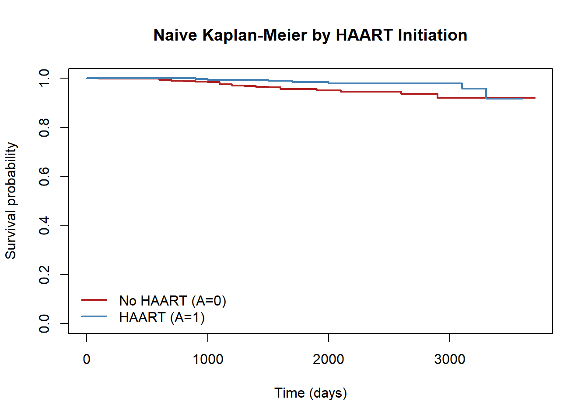
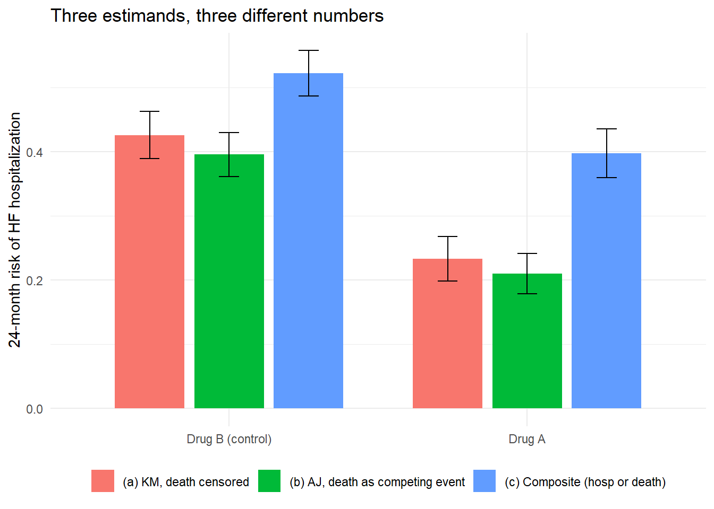
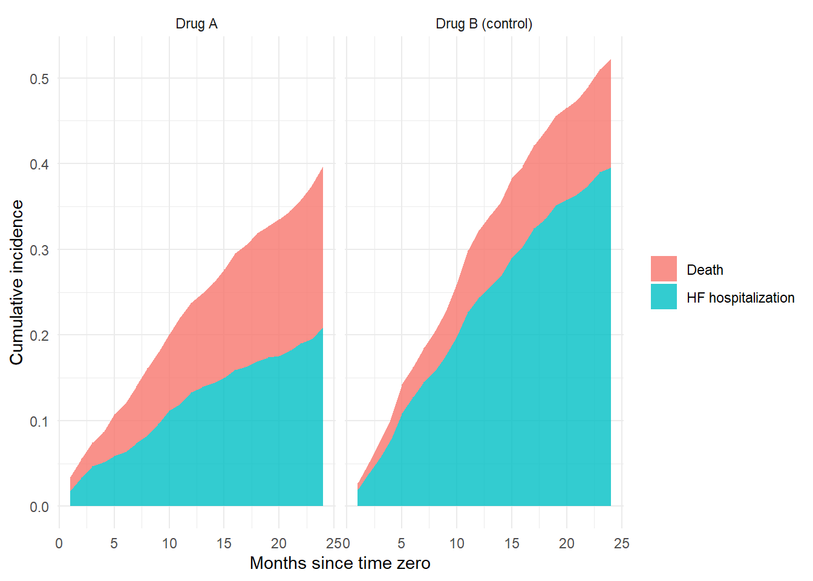
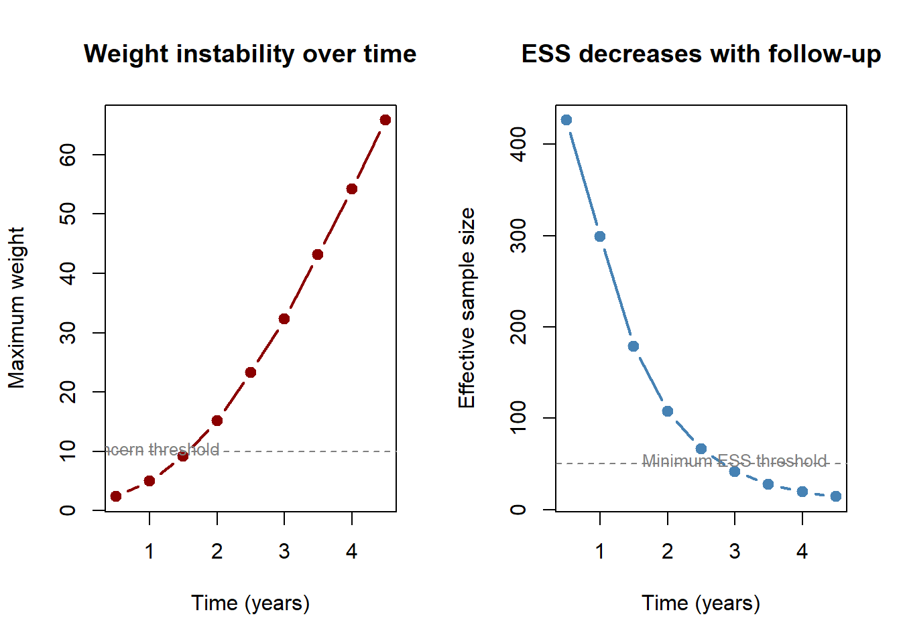

After completing this chapter, you will be able to:
Articulate why the estimand must be defined before the estimator when competing events are present, using the ICH E9(R1) framework.
Distinguish cause-specific hazards, subdistribution hazards, and cumulative incidence functions in plain language and in formulas, and explain which scientific question each answers.
Recognize when “censoring at the competing event and computing \(1-\hat S(t)\)” silently changes the estimand and overestimates observed-world risk.
Apply the Causal Roadmap to move from a clinical question to a survival estimand, identification assumptions, and estimator choice.
Map ICH E9(R1) intercurrent event strategies (treatment policy, composite, hypothetical, while-on-treatment, principal stratum) to censoring and handling approaches in survival TMLE.
Choose between total effect on cumulative incidence, cause-specific hazard estimands, hypothetical (controlled-direct-effect) estimands, and separable effects, and state the identifiability assumptions each requires.
Implement IPCW for informative censoring and diagnose weight instability at long follow-up.
Implement TMLE for competing risks in R (and prototype it in Python or Julia), targeting an adjusted absolute risk at a clinically meaningful horizon with influence-function-based inference.
Diagnose positivity, weight stability, and curve agreement, and design sensitivity analyses around alternative estimands rather than around alternative software defaults.
The longitudinal methods from the preceding chapters extend naturally to time-to-event outcomes. What is new here is choosing an estimand that maps cleanly to a causal question, informative censoring that unfolds over time, and competing risks. This chapter uses the Causal Roadmap framework (Petersen and Laan 2014; Dang, Tager, and Petersen 2023) to tie each analytic decision back to the scientific question, then narrows to the one decision that matters most in any competing-risks analysis: what quantity, exactly, are you trying to estimate? Once that is settled, the estimator usually picks itself.
A study compares Drug A versus Drug B on hospitalization for heart failure (HF) by 24 months. Death before HF hospitalization is common, especially in older and frailer patients. Death prevents future hospitalization. Before writing any model, the analyst has to choose which question is being asked:
The risk of HF hospitalization before death, in the world where some patients die first.
The risk of HF hospitalization if death could somehow be prevented.
The risk of HF hospitalization or death as a composite endpoint.
The effect on HF hospitalization among people who would survive under both strategies (a principal stratum).
The effect while still on treatment, censoring at discontinuation.
Each of these is a different estimand. Each requires different identification assumptions. Each can give a different numerical answer with the same data, and at most one of them is the question the prescriber, regulator, or patient actually wants answered.
22.1.2 A failure mode that motivates everything else
Consider an adjuvant oncology trial. The event of interest is cancer recurrence; non-cancer death is a competing event. A reviewer reads in the methods section:
“Patients were censored at non-cancer death. Recurrence-free survival was estimated by the Kaplan-Meier method.”
That single sentence has almost certainly swapped the estimand without anyone noticing. Kaplan-Meier treats non-cancer deaths as if they were administrative dropouts who might still recur had they been followed longer. They cannot. So the Kaplan-Meier curve answers a counterfactual question that was never the trial’s clinical question:
“What would the recurrence probability be in a hypothetical world where non-cancer death had been prevented?”
If treatment also affects non-cancer mortality, and most cancer therapies do, this hypothetical question is not even close to the patient-facing one (“What is my chance of relapse by 5 years?”). The two can disagree in direction.
Common mistake #1: \(1-\hat S_{\text{KM}}(t)\) as “risk” with competing events
Reporting \(1\) minus the cause-specific Kaplan-Meier estimate as a probability of the event of interest in the presence of competing events:
typically overestimates observed-world cumulative incidence;
silently switches the estimand to a hypothetical “competing-event-free world”;
breaks the comparability of arms when treatment affects the competing event.
Once we agree that competing events change what we mean, the next step is to see that there are at least three legitimate families of scientific questions, each pointing to a different estimand class.
Table 22.1: Three families of questions and their natural estimands
Question family
Plain-English form
Natural estimand
Default estimator
Observed-world risk
“By 5 years, what proportion of patients will have relapsed under treatment \(a\), in the world where some die of other causes first?”
“Among patients still alive and event-free, how does treatment change the rate at which relapse occurs?”
Cause-specific hazard ratio
Cause-specific Cox
Pathway / hypothetical
“What would the relapse risk be if we could prevent non-cancer death?” or “What part of the treatment effect on relapse is not mediated through mortality?”
Controlled direct effect on CIF; separable effects
IPCW, g-formula, AIPW, TMLE with hypothetical censoring
The first family, observed-world risk, is what patients, clinicians, regulators, and payers usually want. The second suits biology-oriented questions where you really do want an instantaneous rate among survivors. The third is rarely the right primary estimand, though it is sometimes scientifically necessary; when it is, defend it explicitly rather than reaching for it as a default.
22.1.4 Risk at time t (cumulative incidence), RMST, and the hazard ratio problem
The default in survival analysis has long been to fit a Cox proportional hazards model and report a hazard ratio. The Causal Roadmap asks us to slow down and separate three steps: (1) define the causal question and estimand, (2) state the identification assumptions, and (3) choose an estimator suited to the data structure (Chen, Petersen, et al. 2023).
The counterfactual risk (cumulative incidence) at a pre-specified time point t is:
\[\Psi = P(T^{a=1} \leq t) - P(T^{a=0} \leq t)\]
This is a marginal risk difference with a clear causal interpretation: “If everyone in the population received treatment versus control, how much would the probability of the event by time t differ?” It is compatible with regulator recommendations for trial estimands and does not require proportional hazards.
The RMST up to time \(\tau\) is the area under the survival curve from 0 to \(\tau\):
\[\text{RMST}(\tau) = \int_0^\tau S(t) \, dt\]
The causal contrast \(\text{RMST}^{a=1}(\tau) - \text{RMST}^{a=0}(\tau)\) summarizes the entire survival curve up to \(\tau\) and does not require proportional hazards (Stensrud et al. 2019).
Hazard ratios are not straightforward causal parameters
Built-in selection bias: The hazard at time t is defined only among survivors to t. Even in a perfectly executed randomized trial, if treatment is effective, high-risk individuals are depleted from the placebo arm faster than from the treatment arm. Comparing hazards at later times then compares groups with systematically different baseline risk profiles.
Non-collapsibility: The conditional HR (within strata) does not equal the marginal HR, even without confounding. Covariate adjustment in a Cox model affects precision and bias, and it also changes the estimand being targeted.
Dependence on censoring distribution: Under non-proportional hazards, the estimand targeted by Cox regression is defined implicitly through an estimating equation that depends on the censoring distribution.
Non-collapsibility is easy to mistake for confounding, so it is worth seeing once with numbers. The example below has no confounding at all: treatment is split evenly within each of two risk strata. The treatment odds ratio is exactly 2 inside each stratum, yet the marginal odds ratio, computed after averaging the risks across strata, is not 2.
Show code
odds <-function(p) p / (1- p)p0 <-c(low_risk =0.10, high_risk =0.50) # untreated risk in each stratump1 <-sapply(p0, function(p) { o <-odds(p) *2; o / (1+ o) }) # within-stratum OR = 2risk1 <-mean(p1); risk0 <-mean(p0) # equal strata, treatment unconfoundedmarginal_OR <-odds(risk1) /odds(risk0)round(c(conditional_OR =2, marginal_OR = marginal_OR), 3)
conditional_OR marginal_OR
2.000 1.719
The conditional odds ratio is 2 in both strata, but the marginal odds ratio is about 1.7. Nothing is biased; the two numbers simply answer different questions, and the odds ratio does not average across strata the way a risk difference does. The hazard ratio behaves the same way, which is why this handbook targets collapsible risk-scale estimands such as the risk difference and the difference in restricted mean survival time.
22.2 Core Concepts
22.2.1 Plain-English vocabulary
A competing risk is an event that prevents the event of interest from occurring or being observed as originally defined. Censoring is different. Censoring means we stop observing someone before we know what would have happened. A competing event means something clinically meaningful happened that changes what can happen next.
It helps to keep five distinct ideas apart. They often get lumped under “censoring,” and they should not be.
Table 22.2: Administrative censoring, LTF, discontinuation, death, and true competing events are five different things
Term
What it is
How it should usually be handled
Administrative censoring
The study’s follow-up window ends before the event happens. The patient is still alive and event-free at last contact.
Treat as independent right censoring.
Loss to follow-up
The patient stops being observed for reasons unrelated (or weakly related) to the outcome process.
Treat as right censoring; check whether it is plausibly conditionally independent given measured covariates.
Treatment discontinuation
The patient stops the assigned treatment. Outcome ascertainment may continue.
An intercurrent event under ICH E9(R1). The strategy depends on the estimand: treatment-policy keeps following the patient, while-on-treatment censors at discontinuation.
Death (when the endpoint is nonfatal)
The patient dies before the event of interest can occur.
A competing event. It is part of the outcome process, not a censoring process.
True competing event (e.g., transplant before waitlist death)
An event that, by definition, makes the event of interest impossible thereafter.
Same as death above: part of the outcome process.
The most common conceptual error in applied competing-risks work is treating the bottom two rows like the top two. Death is not a study-management problem. It is a clinical event that changes the joint outcome process.
22.2.2 Notation
Let \(T\) be the event time and \(J \in \{1, 2\}\) the event type, with \(J = 1\) the event of interest and \(J = 2\) a competing event. Let \(A\) be a baseline treatment, \(W\) a vector of baseline covariates, and \(C\) a (possibly informative) right-censoring time.
22.2.3 Cause-specific hazard
For cause \(j\),
\[
\lambda_j(t) = \lim_{\Delta t \to 0} \frac{P(t \le T < t+\Delta t,\ J=j \mid T \ge t)}{\Delta t}.
\]
In words: among individuals who are still alive and event-free at time \(t\), \(\lambda_j(t)\) is the instantaneous occurrence rate of cause \(j\). It is a rate in the population that has not yet had any event.
22.2.4 Subdistribution hazard
For the event of interest,
\[
\tilde\lambda_1(t) = \lim_{\Delta t \to 0} \frac{P(t \le T < t+\Delta t,\ J=1 \mid T \ge t \ \text{or}\ (T \le t,\ J \ne 1))}{\Delta t}.
\]
The denominator deliberately keeps subjects who already had the competing event in an extended risk set, which is what links \(\tilde\lambda_1\) algebraically to the cumulative incidence function. This is mathematically convenient (Fine-Gray regression coefficients map directly to effects on \(F_1\)), but \(\tilde\lambda_1\) is not a physical event rate among truly event-free people.
22.2.5 Cumulative incidence function (CIF)
Concretely, this is the share of patients who have actually had the event of interest, say relapse, by a given time such as 5 years, counting the real world in which some patients die of other causes first.
\[
F_j(t) = P(T \le t,\ J = j).
\]
This is the probability that cause \(j\) has occurred by time \(t\). It directly answers the patient-level question. The natural nonparametric estimator is the Aalen-Johansen estimator,
where \(\hat S\) is the all-cause survival from the Kaplan-Meier-style product of \(1 - dN/Y\) over all event types, \(dN_j(t_k)\) counts cause-\(j\) events at \(t_k\), and \(Y(t_k)\) is the at-risk size. The key feature: \(\hat F_j(t)\) uses all-cause survival as the carrier, so subjects who die of competing causes drop out of future eligibility for cause \(j\) instead of lingering as if still eligible.
Why AJ ≠ 1−KM (in one line)
KM-based “risk” multiplies \(1 - dN_j / Y\) over time, treating competing events as if those individuals could still experience cause \(j\) later. AJ multiplies the all-cause survival by the cause-specific increment, so it never re-credits people who have already left the population.
In plain English: at each follow-up time, AJ asks two questions in order. First, what fraction of the original cohort is still alive and event-free, given everything so far? Second, of those people, what fraction has the event of interest right now? The cumulative incidence by time \(t\) is the running sum of those “still around” times “event of interest now” pieces. The “still around” pool shrinks with competing events as well as with the event of interest, so a patient who died of a non-cancer cause drops out of the pool that could later contribute relapses.
22.2.6 Plain-language interpretation
Cause-specific hazard: “Among people still alive and event-free, how fast is the event of interest happening right now?”
Cumulative incidence: “By a clinically relevant time point, what proportion have already had the event of interest before any competing event happened first?”
Subdistribution hazard: A mathematical device to model cumulative incidence directly; not a physical rate (Austin and Fine 2017).
These quantities can move in different directions. A treatment can lower the cause-specific hazard of relapse but raise non-cancer mortality enough that the observed risk of relapse falls, mostly because more people die first. A therapy can also raise the relapse hazard yet extend life so much that more people live long enough to relapse, raising the CIF. Both can be “true.” Which one matters depends on the question.
22.3 The Causal Roadmap for Survival Data
The Causal Roadmap (Petersen and Laan 2014; Dang, Tager, and Petersen 2023) is a framework for integrating causal inference with statistical estimation. Applied to a time-to-event RCT or observational study, the steps are:
Causal model and question: Define the counterfactual data structure, including potential outcomes under each treatment. What is the ideal experiment?
Causal estimand: Express the treatment effect as a function of counterfactual outcomes (e.g., risk ratio at time t).
Observed data and identification: Specify how the observed data relates to the ideal experiment, including what gets censored and why.
Identification assumptions: State consistency, positivity (for both treatment and censoring), and conditional exchangeability. Different analyses require different assumptions of different strengths.
Statistical estimand: The observed-data parameter that equals the causal estimand under the identification assumptions.
Estimator: Choose an estimator with desirable properties (efficiency, robustness, doubly robust inference).
Sensitivity analysis: Assess the impact of potential assumption violations.
Different questions, different assumptions
A single dataset can support several causal analyses, each targeting a different estimand and leaning on different identification assumptions. Take the SUSTAIN-6 cardiovascular outcome trial as an illustration (Chen, Rytgaard, et al. 2023; Marso et al. 2016):
Intent-to-treat: What is the effect of being assigned to semaglutide vs. placebo? Only requires that loss-to-follow-up is non-informative.
On-treatment (right-censoring): What would the effect be if all patients adhered to their assigned treatment? Requires that treatment discontinuation for any reason is conditionally independent of MACE given baseline covariates, a much stronger assumption.
On-treatment (competing risks): What is the effect on MACE occurring before treatment discontinuation due to adverse events? Requires only that discontinuation for reasons other than adverse events is conditionally independent of MACE, which is arguably more plausible than the right-censoring assumption.
These three analyses use the same data but answer different clinical questions, target different estimands, and require different assumptions. The Causal Roadmap forces you to spell out each one.
22.4 ICH E9(R1) Intercurrent Events and Censoring Strategies
The ICH E9(R1) addendum defines five strategies for intercurrent events. Each maps to a specific way of handling censoring or the outcome in survival TMLE (Rufibach 2019).
Table 22.3: ICH E9(R1) strategies mapped to survival TMLE approaches
ICH E9(R1) Strategy
Description
Survival TMLE Implementation
Treatment policy
Outcome observed regardless of intercurrent event
No censoring at intercurrent event; analyze all observed outcomes. This is the survival analogue of “intent-to-treat”
Composite
Intercurrent event becomes part of the outcome
Redefine the event indicator to include the intercurrent event (e.g., PFS = min(progression, death))
Hypothetical
Outcome in a world where the intercurrent event could not occur
Censor at intercurrent event and use IPCW to adjust for informative censoring. Alternatively, estimate via continuous-time TMLE with the censoring mechanism modeled
While on treatment
Outcome while receiving assigned treatment
Censor at treatment discontinuation; model the censoring mechanism. Estimand differs from hypothetical: targets risk while on treatment rather than risk in absence of intercurrent event
Principal stratum
Effect among those who would not experience the intercurrent event under either treatment
Requires principal stratification methods; not handled by standard survival TMLE
Censoring is part of the estimator, not the estimand
One distinction is worth stating plainly: the decision to censor at an intercurrent event is an estimation strategy, not a definition of the quantity of interest. The estimand comes first (what would we like to know?), and the censoring approach follows (how do we estimate it from data where the intercurrent event occurs?). The hypothetical and while-on-treatment strategies may censor at the same event, yet target different estimands, and that difference shows up in the choice of summary measure (Rufibach 2019).
22.5 Estimands and Causal Interpretation
22.5.1 Total effect on cumulative incidence
For a baseline treatment \(A\), the contrast
\[
F_1^{a=1}(t) - F_1^{a=0}(t)
\]
is the total effect on the event of interest by time \(t\). It is the cumulative incidence patients actually face under each treatment strategy. In randomized trials with adequate follow-up, this is usually the cleanest causal estimand. In observational data it requires consistency, conditional exchangeability given measured confounders, and positivity for treatment.
22.5.2 Cause-specific hazard estimands
The cause-specific hazard ratio is much harder to interpret causally. Even in randomized studies, hazard-based contrasts condition on remaining event-free to time \(t\), and treatment may affect who remains in that risk set through earlier effects on either cause. A cause-specific hazard ratio is therefore generally not a marginal causal effect, even under randomization. Use it for etiology, not for the patient-facing risk question.
we are asking what the risk would be in a world where the competing event had been prevented. Identifiability now takes on an extra, often heroic, assumption: that those artificially censored at the competing event are exchangeable, given measured history, with those who remain uncensored. We also need positivity for the induced censoring mechanism. These assumptions are least plausible exactly when competing events are common and clinically important.
22.5.4 Separable effects
If the underlying scientific question is really pathway-based (“What part of the treatment effect on relapse operates through mortality, and what part does not?”), the modern answer is separable effects rather than ad hoc censoring. Conceptually, treatment \(A\) splits into two components \(A_Y\) (acting on the event of interest) and \(A_D\) (acting on the competing event). Identification then rests on a treatment-decomposition assumption: that one can intervene on the components separately. This is a far cleaner pathway estimand than “censor the competing event,” but only when the decomposition is scientifically meaningful, for instance separating an antineoplastic effect from a cardiotoxic one.
Identifiability summary
Estimand
Beyond consistency, requires…
Cause-specific hazard (descriptive)
Independent right censoring; correct hazard model
Total effect on CIF
Conditional exchangeability for \(A\); positivity for \(A\); independent right censoring given \((A,W)\)
Hypothetical CIF (CDE)
All of the above plus exchangeability for the censoring induced by removing the competing event, plus positivity in the induced pseudo-population
Separable effects
Total-effect assumptions plus treatment-decomposition assumption (and partial isolation)
Each row down the table adds assumptions that are typically harder to defend than the one before.
22.5.5 Connecting competing risks to the Causal Roadmap
The choice between approaches is an estimand choice, not a statistical one:
“What would the risk of MACE be if patients could not die from other causes?” This is a hypothetical estimand. Estimate via cause-specific IPCW, treating non-CV death as informative censoring. It rests on the untestable assumption that the competing-event mechanism is conditionally independent of the outcome.
“What is the actual probability of MACE by time t, given that patients can also die from other causes?” This is the cumulative incidence (CIF) estimand. Estimate via Aalen-Johansen or subdistribution methods. It is the clinically relevant quantity for prognostic planning (Young et al. 2020).
“What is the effect on MACE occurring before treatment discontinuation due to adverse events?” This targets a competing-risk cumulative incidence where treatment discontinuation is the competing event, the estimand used in the SUSTAIN-6 competing-risk analysis (Chen, Rytgaard, et al. 2023).
When the competing event tells the story
In the SUSTAIN-6 trial analysis, semaglutide reduced MACE risk but increased treatment discontinuation due to adverse events. The competing-risk analysis showed that the increased discontinuation risk was larger in magnitude than the decreased MACE risk. This trade-off is at bottom an estimand-choice issue: the competing-risk analysis answers a different clinical question than the right-censoring analysis, and the gap in results reflects that, not a modeling artifact (Chen, Rytgaard, et al. 2023).
22.6 Choosing the Method
The key practical point is that “censoring at the competing event” versus “modeling the competing event” is partly a false dichotomy. A cause-specific Cox model does censor the competing event in the cause-1 indicator, and that is fine if the estimand is a cause-specific hazard. The real mistake is to take that censored analysis and read \(1-\hat S_{\text{KM}}\), or a single cause-specific hazard ratio, as if it were the observed-world cumulative risk.
If the goal is risk, either estimate cumulative incidence directly or model all relevant cause-specific hazards and combine them into cumulative incidence.
22.6.1 Method comparison table
Table 22.4: Method comparison for competing-risks analysis
Approach
Estimand
Main assumptions
Typical bias source
Software
Code skeleton
Verdict
Naive censoring + \(1-\hat S_{\text{KM}}\)
Unintended hypothetical risk
Competing event acts like non-informative censoring (rarely credible)
Overestimates observed-world risk
Any survival package
survfit(Surv(time, event==1) ~ A)
Do not use for observed-world risk
Cause-specific Cox
Instantaneous rate of cause 1 among event-free
Independent censoring; correct hazard model; for causal use, conditional exchangeability and positivity
HR misread as risk effect; selection through survivors
R survival; Py scikit-survival; Jl LSurvival.jl
coxph(Surv(time, event==1) ~ A + W)
Best for etiologic questions; pair with CIF
Nonparametric / standardized CIF (AJ)
Actual probability of event by \(t\)
Independent right censoring; correct nuisance models for adjusted versions
Confounded if unadjusted; misspecification if adjusted
R cmprsk, riskRegression, adjustedCurves; Py scikit-survival, lifelines; Jl LSurvival.jl
Coefficients hard to interpret causally; pathway-blending
R cmprsk::crr, riskRegression::FGR; SAS PHREG; Stata stcrreg
crr(time, event, X, failcode=1)
Useful for prognosis; not for etiologic causal interpretation
IPCW after censoring competing event
Hypothetical CDE on CIF
Well-defined hypothetical; exchangeability for induced censoring; positivity
Extreme weights; fragile late in follow-up
R causalCmprsk; weighted pooled-logistic pipelines
glm(N1 ~ A + W + t, weights=1/(gAhat*GChat), family=binomial)
Use only when the hypothetical estimand is justified
TMLE for CIF
Adjusted absolute risk (total or hypothetical)
Causal assumptions for the chosen target; positivity; nuisance robustness
Weak positivity; unstable IPCW component
R survtmle, concrete; Py PyTMLE or custom; Jl TMLE.jl + custom
survtmle(..., method="hazard", returnIC=TRUE)
Best advanced choice for adjusted absolute-risk estimation
When proportional subdistribution hazards look dubious, direct CIF or absolute-risk regression (e.g., timereg) is preferable to forcing a Fine-Gray model.
22.6.2 Decision flowchart
flowchart TD
A[Start with the scientific question] --> B{Is the target the actual probability of the event by time t in the world where competing events occur?}
B -->|Yes| C[Include the competing event in the estimand]
C --> D{Is the goal mainly descriptive or unadjusted group comparison?}
D -->|Yes| E[Aalen-Johansen CIF curves]
D -->|No| F{Primary goal is prognosis or absolute-risk prediction?}
F -->|Yes| G[Adjusted CIF / Fine-Gray / direct risk regression / TMLE]
F -->|No| H[Cause-specific hazard models for each cause AND report CIF]
B -->|No| I{Is a hypothetical intervention preventing the competing event scientifically meaningful and decision-relevant?}
I -->|No| J[Reconsider the estimand; do not censor the competing event]
I -->|Yes| K[Hypothetical direct-effect estimand]
K --> L[IPCW, g-formula, AIPW, or TMLE with explicit competing-event censoring model]
E --> M[Check curve agreement and report competing-event incidence]
G --> M
H --> M
L --> N[Inspect weights, positivity, and sensitivity to modeling assumptions]
22.7 Informative Censoring and IPCW
When censoring depends on covariates that also predict the outcome, naive Kaplan-Meier or Cox estimates are biased. Inverse probability of censoring weighting (IPCW) carries the IPTW chapter’s logic over to the censoring mechanism: upweight individuals who remain uncensored but have covariate profiles similar to those who were censored (Robins, Rotnitzky, and Zhao 1994).
At each time point \(t_k\), the cumulative IPCW weight is:
Because IPCW weights are a product over time points, instability compounds exponentially. With a per-period uncensored probability of 0.95, after 20 time points the weight is \(1/0.95^{20} \approx 2.65\); at 0.80 per period, weights blow up to \(1/0.80^{20} \approx 87\). Positivity violations accumulate, effective sample size shrinks, and a few individuals can dominate the estimate.
Remedies:
Truncate weights (with sensitivity analysis on the truncation threshold)
Restrict follow-up to a horizon with stable weights
Use stabilized weights: \(SW_C(t_k) = \prod_{j=1}^k \frac{P(C > t_j \mid C > t_{j-1})}{P(C > t_j \mid C > t_{j-1}, \bar{A}_{j-1}, \bar{L}_{j-1})}\)
Use TMLE, whose targeting step provides additional stabilization relative to pure IPCW
22.8 TMLE for Competing Risks
22.8.1 Why TMLE here
When the target is an adjusted absolute risk at one or more clinically meaningful horizons, four properties of TMLE matter here:
It targets the estimand directly, rather than reporting a regression coefficient and hoping it maps to the question.
It is a plug-in estimator constrained to the parameter space, so estimated risks stay in \([0,1]\) even with flexible nuisance learners.
It supports data-adaptive nuisance estimation (e.g., Super Learner) without sacrificing valid inference.
It yields influence-function-based standard errors, which extend naturally to risk differences, risk ratios, and simultaneous bands over multiple horizons.
Two discrete-time formulations are common in practice: a cause-specific hazard TMLE and an iterated-conditional-mean TMLE. The R package survtmle exposes both. Recent work extends TMLE to continuous time and to simultaneous inference over absolute-risk curves through one-step targeting, implemented in R concrete(Rytgaard, Gerds, and Laan 2021).
22.8.2 Target parameter and identification
In a discrete-time representation over intervals \(k = 1, \dots, \tau\), define the cause-specific hazards
\[
h_j(k, a, w) = P(N_{jk} = 1 \mid Y_k = 1, A = a, W = w), \quad j \in \{1, 2\},
\]
where \(Y_k\) indicates being uncensored and event-free at the start of interval \(k\), and \(N_{jk}\) indicates cause-\(j\) occurrence in interval \(k\). The treatment-specific cumulative incidence for cause 1 at horizon \(\tau\) is
\[
\psi_a(\tau) = E_W\!\left[ \sum_{k=1}^{\tau} h_1(k, a, W) \prod_{u=1}^{k-1} \{1 - h_1(u, a, W) - h_2(u, a, W)\} \right].
\]
Read this in pieces. The product is the probability of being event-free through interval \(k-1\) under treatment \(a\). The factor \(h_1(k, a, W)\) is the conditional hazard of the event of interest in interval \(k\). Their product, summed over \(k\), is the probability of first experiencing the event of interest by \(\tau\). The outer expectation standardizes over the baseline covariate distribution.
Identification of \(\psi_a(\tau)\) as a causal target requires the usual point-treatment assumptions: consistency, conditional exchangeability of \(A\) given \(W\), positivity, and independent censoring conditional on the measured history.
22.8.3 Influence functions and targeted updates
For a fixed treatment \(a\) and horizon \(\tau\), the efficient influence function (EIF) for the CIF target can be written schematically as
The first term is a weighted residual for the event-of-interest hazard. The second recenters the observation around the marginal target. The clever covariate\(H_{a,\tau,k}(O)\) contains:
the inverse probability of treatment \(g_A(a \mid W)^{-1}\),
the inverse probability of remaining uncensored up to \(k\), \(G_C(k \mid A, W)^{-1}\),
a factor that propagates the contribution of interval \(k\) forward to horizon \(\tau\) (essentially the remaining event-free survival under treatment \(a\)).
The targeting step updates the initial nuisance estimates along a least-favorable submodel via a logistic fluctuation:
\[
\text{logit}\{h_1^*(k, A, W)\} = \text{logit}\{\hat h_1(k, A, W)\} + \varepsilon \, H_{a, \tau, k}(O),
\]
where \(\varepsilon\) is chosen so that the empirical mean of the estimated influence function is driven close to zero. TMLE thus starts from an initial estimate of the hazards or conditional means, then targets it to the exact parameter of interest instead of accepting the initial nuisance fit as final.
In competing-risks settings, IPCW enters TMLE through the clever covariate. This is why TMLE can be read as a doubly robust refinement of pure IPCW: it uses censoring weights and borrows strength from direct modeling of the event process.
22.8.4 Pseudo-code
Input:
O_i = (W_i, A_i, T_i, Delta_i), i = 1,...,n
event_of_interest = 1; competing_event = 2; horizon = tau
Step 1. Expand to person-period data for k = 1,...,tau
Build Y_ik, N1_ik, N2_ik, C_ik
Step 2. Fit treatment model gA_hat(A | W)
Fit censoring model GC_hat(k | A, W)
Fit cause-specific hazard models h1_hat(k | A, W), h2_hat(k | A, W)
Step 3. Initial plug-in CIF:
psi_a_init(tau) = average over W of
sum_k h1_hat(k,a,W) * prod_{u<k}[1 - h1_hat(u,a,W) - h2_hat(u,a,W)]
Step 4. Construct clever covariate H_{a,tau,k} using:
inverse treatment probability, inverse censoring survival,
remaining survival/competing-event-free contribution to tau
Step 5. Targeting update:
logit(h1_star) = logit(h1_hat) + epsilon * H
Update other nuisance components along their submodels if needed
Step 6. Recompute targeted CIF psi_a_star(tau)
Compute estimated influence function D_i_star
Step 7. Report contrasts: risk difference, risk ratio
Step 8. Variance: Var_hat(psi) = (1/n^2) * sum_i (D_i_star)^2
Build Wald or simultaneous confidence intervals/bands
For vectors of risks at multiple times, use the empirical covariance matrix of the IF vectors. Risk differences and risk ratios follow from direct IF algebra or the delta method.
Three finite-sample cautions:
Report any weight or propensity truncation explicitly. If positivity is weak, Wald intervals based on the IF can be optimistic.
With data-adaptive nuisance fits, use cross-validation or cross-fitting. If you bootstrap, rerun the entire nuisance and targeting pipeline inside each bootstrap resample.
For full-curve inference, use one-step continuous-time TMLE (e.g., concrete) to get simultaneous bands rather than stitching together unrelated pointwise intervals.
Common mistake #2: black-box trust in TMLE output
A tidy survtmle table with a tight confidence interval can hide a positivity catastrophe. Before reporting a TMLE estimate:
Inspect the distribution of treatment and censoring weights (and any truncation).
Plot the empirical mean of the estimated influence function across iterations: it should sit close to zero.
Compare the targeted CIF to the unadjusted Aalen-Johansen curve. Large differences should be explainable by confounding, not by a fragile nuisance fit.
Re-run with stricter weight truncation. If results move materially, that is a finding worth reporting.
22.8.10 Continuous-time TMLE with concrete
Standard survival TMLE implementations (e.g., survtmle) discretize continuous event times into bins and apply longitudinal TMLE within each bin. A continuous-time TMLE, implemented in the concrete R package (Chen, Rytgaard, et al. 2023; Rytgaard, Eriksson, and Laan 2023; Rytgaard and Laan 2023), sidesteps these issues. It represents the observed data through counting processes and intensities, estimates conditional cause-specific hazards with Cox regression or penalized Cox (coxnet) via Super Learner, and applies a targeting step that solves the efficient influence curve equation in continuous time.
In the SUSTAIN-6 application, continuous-time TMLE gave 7 to 29% efficiency gains over unadjusted Kaplan-Meier and Aalen-Johansen estimators, whereas discrete-time TMLE with non-optimized bin widths sometimes did worse than the unadjusted estimators (Chen, Rytgaard, et al. 2023).
22.9 Worked Example: Survival TMLE with the ART Cohort
We use the HIV antiretroviral therapy (ART) cohort from the ipw package (Wal and Geskus 2011), the running case study for this handbook. Here we frame a survival analysis: does initiating HAART reduce the risk of death by 2,000 days (about 5.5 years), accounting for confounding by indication and the competing event of dropout?
22.9.1 Setup and Data Preparation
Show code
library(survival)library(ipw)library(dplyr)library(ggplot2)# Load the ART cohortdata(haartdat)# Create a point-treatment dataset: first record per patienthaart_surv <- haartdat |>group_by(patient) |>summarise(sex =first(sex),age =first(age),cd4_sqrt_bl =first(cd4.sqrt),A =max(haartind), # ever initiated HAARTtime =max(fuptime), # total follow-up (days)died =max(event), # death indicatordropout =max(dropout), # dropout indicator.groups ="drop" ) |>mutate(# Event type: 0 = censored (administrative), 1 = death, 2 = dropoutevent_type =case_when( died ==1~1L, dropout ==1~2L,TRUE~0L ),# For survival analysis, use death as primary eventtime_years = time /365.25 )cat("Sample size:", nrow(haart_surv), "\n")
The unadjusted Kaplan-Meier ignores confounding by indication (sicker patients, with lower CD4, are more likely to receive HAART and more likely to die) and treats dropout as non-informative censoring.
Show code
km_fit <-survfit(Surv(time, died) ~ A, data = haart_surv)plot(km_fit, col =c("firebrick", "steelblue"), lwd =2,xlab ="Time (days)", ylab ="Survival probability",main ="Naive Kaplan-Meier by HAART Initiation")legend("bottomleft", c("No HAART (A=0)", "HAART (A=1)"),col =c("firebrick", "steelblue"), lwd =2, bty ="n")

Figure 22.1: Naive Kaplan-Meier survival curves by HAART initiation. The crossing or convergence of curves reflects confounding by indication, not the causal effect of treatment.
This naive comparison is misleading: confounding by indication, where low CD4 drives both treatment initiation and mortality, biases it.
22.9.3 Cumulative Incidence with Competing Risks (Aalen-Johansen)
Dropout can be treated as a competing event. The Aalen-Johansen estimator provides cause-specific cumulative incidence functions, but does not adjust for confounding.
Show code
# Multi-state event factorhaart_surv$event_ms <-factor(haart_surv$event_type, levels =0:2,labels =c("censored", "death", "dropout"))aj_fit <-survfit(Surv(time, event_ms) ~ A, data = haart_surv)plot(aj_fit, col =c("firebrick", "steelblue"), lwd =2,xlab ="Time (days)", ylab ="Cumulative incidence",main ="Aalen-Johansen Cumulative Incidence by HAART Status")
Figure 22.2: Aalen-Johansen cumulative incidence for death and dropout by HAART status. Accounts for competing risks but not confounding.
22.9.4 Adjusted Survival via IPTW
To address confounding, we compute stabilized IPTW weights using baseline covariates and apply them to the Kaplan-Meier estimator.
Show code
# Propensity score modelps_model <-glm(A ~ age + sex + cd4_sqrt_bl,data = haart_surv, family = binomial)haart_surv$ps <-predict(ps_model, type ="response")# Stabilized weightsp_A <-mean(haart_surv$A)haart_surv$sw <-ifelse(haart_surv$A ==1, p_A / haart_surv$ps, (1- p_A) / (1- haart_surv$ps))# Truncate extreme weights at 1st and 99th percentilesq_bounds <-quantile(haart_surv$sw, c(0.01, 0.99))haart_surv$sw_trunc <-pmin(pmax(haart_surv$sw, q_bounds[1]), q_bounds[2])cat("Weight summary (truncated):\n")
Weight summary (truncated):
Show code
summary(haart_surv$sw_trunc)
Min. 1st Qu. Median Mean 3rd Qu. Max.
0.5442 0.8727 0.9642 1.0000 1.0685 2.0180
Figure 22.3: IPTW-weighted Kaplan-Meier curves adjusting for confounding by age, sex, and baseline CD4. Compare to the naive KM above.
22.9.5 TMLE for Risk Difference at Time t
For a doubly robust estimate, we use survtmle to target the risk difference at a specific time point. This discretizes time but buys robustness against misspecification of either the outcome model or the censoring model.
Show code
library(survtmle)# survtmle requires positive event times; filter patients with time = 0haart_pos <- haart_surv |>filter(time >0)# Target: risk of death by day 2000 (~5.5 years)t_target <-2000fit_tmle <-survtmle(ftime = haart_pos$time,ftype =ifelse(haart_pos$died ==1, 1, 0),trt = haart_pos$A,adjustVars = haart_pos[, c("age", "sex", "cd4_sqrt_bl")],t0 = t_target,SL.ftime =c("SL.glm", "SL.mean"),SL.ctime =c("SL.glm", "SL.mean"),SL.trt =c("SL.glm", "SL.mean"),method ="hazard")# Extract marginal risks and risk differencerisk_A0 <- fit_tmle$est[1]risk_A1 <- fit_tmle$est[2]RD <- risk_A1 - risk_A0cat(sprintf("Risk under A=0 (no HAART): %.4f\n", risk_A0))
Risk under A=0 (no HAART): 0.9409
Show code
cat(sprintf("Risk under A=1 (HAART): %.4f\n", risk_A1))
For continuous-time survival data, the concrete R package avoids discretization entirely. It estimates cause-specific hazards using Cox/penalized Cox models via Super Learner, then applies the continuous-time TMLE targeting step.
Show code
library(concrete)# concrete requires positive event times; filter patients with time = 0haart_pos <- haart_surv |>filter(time >0)# Format data for concreteconcrete_data <-data.frame(T = haart_pos$time,Delta = haart_pos$event_type, # 0 = censored, 1 = death, 2 = dropoutA = haart_pos$A,age = haart_pos$age,sex = haart_pos$sex,cd4_sqrt_bl = haart_pos$cd4_sqrt_bl)# makeITT() creates the intent-to-treat intervention for a binary treatmentintervention <-makeITT()# Format arguments and fit nuisance parameters via Super Learnerconcrete_est <-formatArguments(DataTable = concrete_data,EventTime ="T",EventType ="Delta",Treatment ="A",Covariates =c("age", "sex", "cd4_sqrt_bl"),TargetTime =2000,TargetEvent =1, # death (primary event of interest)Intervention = intervention,MaxUpdateIter =250,CVArg =list(V =5),Verbose =FALSE)# Run continuous-time TMLEconcrete_est <-doConcrete(concrete_est)# Extract results: risk estimates, differences, and CIsconcrete_results <-getOutput(concrete_est)print(concrete_results)
Time Event Estimand Intervention Estimator Pt Est se CI Low CI Hi
<num> <num> <char> <char> <char> <num> <num> <num> <num>
1: 2000 1 Abs Risk A=0 tmle 0.0337 0.00751 0.018900 0.0484
2: 2000 1 Abs Risk A=0 gcomp 0.0337 NA NA NA
3: 2000 1 Abs Risk A=1 tmle 0.0148 0.00777 -0.000387 0.0301
4: 2000 1 Abs Risk A=1 gcomp 0.0148 NA NA NA
SimCI Low SimCI Hi pValue
<num> <num> <num>
1: 0.01650 0.0509 NA
2: NA NA NA
3: -0.00296 0.0326 NA
4: NA NA NA
The concrete output gives risk estimates under each treatment level at the target time, along with risk differences and risk ratios with influence-curve-based confidence intervals. Compare these to the discrete-time survtmle estimates above: both target the same estimand, but concrete operates in continuous time.
22.10 Applied Example: Heart Failure Hospitalization with Death as a Competing Event
This worked example shows how the choice of estimand changes the numeric answer on one dataset. We simulate a small pharmacoepidemiology cohort in which Drug A reduces HF hospitalization but slightly increases mortality in frailer patients, exactly the pattern that makes “censoring at death” misleading.
22.10.1 Simulate the cohort
Show code
library(tidyverse)library(survival)set.seed(42)n <-1500cohort <-tibble(id =seq_len(n),age =rnorm(n, 70, 8),prior_cvd =rbinom(n, 1, 0.45),kidney =rbinom(n, 1, 0.30),frailty =rnorm(n, 0, 1)) %>%mutate(# treatment more likely in less frail patients (mild confounding)pA =plogis(-0.2+0.02* (age -70) -0.3* frailty),A =rbinom(n, 1, pA) )# Discrete-time hazards over 24 monthsmonths <-24sim_long <- cohort %>%crossing(t =seq_len(months)) %>%arrange(id, t) %>%group_by(id) %>%mutate(# hospitalization hazard: lower under A, higher with prior CVD/kidney/ageh_hosp =plogis(-4.0+0.02* (age -70) +0.5* prior_cvd+0.4* kidney +0.2* frailty -0.7* A),# death hazard: SLIGHTLY HIGHER under A in frail patientsh_death =plogis(-5.0+0.04* (age -70) +0.3* kidney+0.5* frailty +0.4* A * (frailty >0)),# loss-to-follow-up hazard: small, weakly informativeh_ltfu =plogis(-5.5+0.1* frailty) ) %>%ungroup()# Walk forward in time and assign the first eventdraw_event <-function(df_id) {for (k inseq_len(nrow(df_id))) { u <-runif(3)if (u[1] < df_id$h_hosp[k]) return(tibble(time = k, event =1))if (u[2] < df_id$h_death[k]) return(tibble(time = k, event =2))if (u[3] < df_id$h_ltfu[k]) return(tibble(time = k, event =3)) }tibble(time =nrow(df_id), event =0) # admin censored at end of follow-up}events <- sim_long %>%group_by(id) %>%group_modify(~draw_event(.x)) %>%ungroup()dat <- cohort %>%select(id, age, prior_cvd, kidney, frailty, A) %>%left_join(events, by ="id")# Coding: 0 = admin censor, 1 = HF hospitalization, 2 = death, 3 = LTFUdat %>%count(A, event)
The event-code table is the first thing to inspect. In this simulation death is more common under A, hospitalization is less common under A, and LTFU is small.
22.10.2 Three estimands, three numbers
We now compute the 24-month risk of HF hospitalization three ways: (a) censoring death (wrong for the observed-world question), (b) treating death as a competing event (right for the observed-world question), and (c) using a composite of HF hospitalization or death.
Show code
# (a) Naive Kaplan-Meier: death and LTFU both censoredkm_fit <-survfit(Surv(time, event ==1) ~ A,data = dat %>%mutate(event =if_else(event ==1, 1, 0)))km_24 <-summary(km_fit, times =24, extend =TRUE)km_risk <-tibble(A =c(0, 1),risk =1- km_24$surv,se = km_24$std.err)# (b) Aalen-Johansen / cumulative incidence: death is a competing event,# LTFU and admin censoring are right censoringaj_dat <- dat %>%mutate(cr_event =case_when( event ==1~1L, # HF hospitalization event ==2~2L, # death (competing)TRUE~0L # admin censor or LTFU ) )aj_fit <-survfit(Surv(time, factor(cr_event, levels =0:2)) ~ A,data = aj_dat)# Pull the cumulative incidence for HF hospitalization at t = 24aj_24 <-summary(aj_fit, times =24, extend =TRUE)aj_risk <-tibble(A =rep(c(0, 1), each =1),# column 2 of pstate is cause 1 (HF hospitalization)risk = aj_24$pstate[, 2],se = aj_24$std.err[, 2])# (c) Composite endpoint: hospitalization OR deathcomp_fit <-survfit(Surv(time, event %in%c(1, 2)) ~ A,data = dat)comp_24 <-summary(comp_fit, times =24, extend =TRUE)comp_risk <-tibble(A =c(0, 1),risk =1- comp_24$surv,se = comp_24$std.err)estimand_tbl <-bind_rows( km_risk %>%mutate(estimand ="(a) KM, death censored"), aj_risk %>%mutate(estimand ="(b) AJ, death as competing event"), comp_risk %>%mutate(estimand ="(c) Composite (hosp or death)")) %>%arrange(estimand, A)estimand_tbl
# A tibble: 6 × 4
A risk se estimand
<dbl> <dbl> <dbl> <chr>
1 0 0.426 0.0187 (a) KM, death censored
2 1 0.233 0.0177 (a) KM, death censored
3 0 0.396 0.0176 (b) AJ, death as competing event
4 1 0.210 0.0160 (b) AJ, death as competing event
5 0 0.522 0.0181 (c) Composite (hosp or death)
6 1 0.398 0.0193 (c) Composite (hosp or death)
Show code
ggplot(estimand_tbl, aes(factor(A, labels =c("Drug B (control)", "Drug A")), risk, fill = estimand)) +geom_col(position =position_dodge(0.8), width =0.7) +geom_errorbar(aes(ymin =pmax(risk -1.96* se, 0), ymax = risk +1.96* se),position =position_dodge(0.8), width =0.2) +labs(x =NULL, y ="24-month risk of HF hospitalization", fill =NULL,title ="Three estimands, three different numbers") +theme_minimal() +theme(legend.position ="bottom")

Figure 22.4: 24-month risk of HF hospitalization estimated three ways, by treatment arm (95% CIs). Censoring death (a) inflates the risk relative to the competing-risks Aalen-Johansen estimate (b); the composite endpoint (c) is larger still because it counts a different outcome. The three answers disagree by construction, which is why the estimand must be fixed before the estimator.
The three numbers will not agree, and that disagreement is the whole point. Censoring death (estimand a) inflates the apparent risk of HF hospitalization, especially under Drug A, because frail patients who would have died early are held “at risk” in the KM denominator as if they could still hospitalize. The AJ number (estimand b) is the patient-facing observed-world risk. The composite (estimand c) is bigger than both because it counts a different outcome.
22.10.3 Stacked cumulative incidence by treatment
Show code
aj_curve <- broom::tidy(aj_fit) %>%filter(state %in%c("1", "2")) %>%mutate(cause =recode(state, `1`="HF hospitalization", `2`="Death"),arm =if_else(strata =="A=0", "Drug B (control)", "Drug A") )aj_curve %>%ggplot(aes(time, estimate, fill = cause)) +geom_area(position ="stack", alpha =0.8) +facet_wrap(~ arm) +labs(x ="Months since time zero", y ="Cumulative incidence",fill =NULL) +theme_minimal()

Stacked cumulative incidence: HF hospitalization (cause 1) and death (cause 2) by treatment arm.
A reader can now see at a glance that Drug A pushes the death curve up and the HF hospitalization curve down. Report only the HF hospitalization side of the comparison and you hide half of what the drug does.
22.10.4 Manual cumulative incidence function
It is useful to build a tiny CIF by hand to make the formula concrete. The recipe at each month is:
Compute the hospitalization hazard among those still at risk.
Compute the death hazard among those still at risk.
Add \(S_{k-1} \cdot h_{\text{hosp},k}\) to the running cumulative incidence.
In words: cumulative incidence accumulates the chance of having the event of interest at each time, weighted by the chance of still being free of any event just before that time.
Show code
manual_cif <-function(time, event, horizon) { n_total <-length(time) # everyone is at risk at time zerotibble(time = time, event = event) %>%arrange(time) %>%group_by(time) %>%summarise(d_hosp =sum(event ==1), # hospitalizations at this timed_death =sum(event ==2), # competing deaths at this timen_exit = dplyr::n(), # subjects leaving the risk set (event or censor).groups ="drop" ) %>%mutate(# at-risk just before each distinct time = total minus those who exited earliern_at_risk = n_total -cumsum(lag(n_exit, default =0)),h_hosp = d_hosp /pmax(n_at_risk, 1),h_death = d_death /pmax(n_at_risk, 1),S_prev =cumprod(lag(1- h_hosp - h_death, default =1)),cif_hosp =cumsum(S_prev * h_hosp) ) %>%filter(time <= horizon) %>%select(time, n_at_risk, h_hosp, h_death, S_prev, cif_hosp)}dat %>%group_by(A) %>%group_modify(~manual_cif(.x$time, .x$event, horizon =24)) %>%filter(time %in%c(6, 12, 18, 24))
This hand-rolled estimator is not production code, but it makes the moving parts of AJ visible: the hazard of death feeds into the running survival factor \(S_{k-1}\), which is why competing events shrink the cumulative incidence of the event of interest rather than inflate it the way naive KM does.
22.10.5 Adjusted absolute risk via TMLE
If the analytic goal is a confounder-adjusted 24-month risk difference, the survival TMLE machinery applies directly. With the event coding above (0 = censor, 1 = HF hospitalization, 2 = death), a minimal call is:
The adjusted TMLE estimate confirms the descriptive Aalen-Johansen picture: Drug A lowers the cumulative incidence of HF hospitalization (cause 1) while raising the cumulative incidence of death (cause 2). TMLE does not choose the estimand for you; the software choice is downstream of the estimand. Two analyses can both call survtmle and target completely different quantities depending on whether death is coded as a competing event (cause 2) or recoded as censoring. The software will hand back a confidence interval either way. Only the analyst can decide which question is being asked.
22.11 Diagnostics
22.11.1 Weight trajectories and effective sample size
The effective sample size (ESS) is the central diagnostic for weighted survival analyses:
# Compute ESS at multiple time horizonstime_grid <-seq(200, 3000, by =200)diag_df <-data.frame(time = time_grid,n_at_risk =NA_real_,max_weight =NA_real_,ess =NA_real_)for (i inseq_along(time_grid)) { tk <- time_grid[i] at_risk <- haart_surv$time >= tk w <- haart_surv$sw_trunc[at_risk] diag_df$n_at_risk[i] <-sum(at_risk) diag_df$max_weight[i] <-max(w) diag_df$ess[i] <-sum(w)^2/sum(w^2)}par(mfrow =c(1, 2), mar =c(4, 4, 3, 1))plot(diag_df$time, diag_df$max_weight, type ="b",pch =19, col ="darkred", lwd =2,xlab ="Time (days)", ylab ="Maximum weight",main ="Weight instability over time")abline(h =10, lty =2, col ="gray50")plot(diag_df$time, diag_df$ess, type ="b",pch =19, col ="steelblue", lwd =2,xlab ="Time (days)", ylab ="Effective sample size",main ="ESS decreases with follow-up")abline(h =50, lty =2, col ="gray50")par(mfrow =c(1, 1))

Figure 22.5: Diagnostic plots for IPTW weights: maximum weight and effective sample size over follow-up. Instability at later time points signals positivity concerns.
Rules of thumb for ESS:
ESS < 50 at your target time point: results are unreliable
For descriptive work, the fastest diagnostic is to compare the cumulative incidence curve with \(1-\hat S_{\text{KM}}\). A large gap means the competing event matters and that naive censoring would be consequential.
For cause-specific Cox models, use Schoenfeld-type checks and time-varying effects when needed. Then compare the model-implied cumulative incidence, combining all cause-specific hazards, against nonparametric AJ. A well-fitting cause-specific model should reproduce the observed CIF reasonably well.
For Fine-Gray models, use cumulative-residual diagnostics for proportionality, linearity, and the link assumption. Evaluate calibration and discrimination on the cumulative-incidence scale, not just coefficient significance.
For IPCW and TMLE, inspect treatment and censoring weights directly: tails, summary statistics, truncation rules, and support over time. If inference changes materially after reasonable truncation or alternate censoring models, the analysis is leaning on fragile extrapolation.
Sensitivity analyses should probe assumptions, not just software defaults:
Alternative estimands. Always report at least the CIF of the event of interest and the CIF of the competing event. If a hypothetical estimand is primary, also report the total effect on CIF.
Alternative censoring models. Pre-specify at least one alternative specification.
Different truncation rules for IPCW or propensity weights.
Nonproportional-hazards relaxations for Cox or Fine-Gray models.
Competing-event misclassification. Probabilistic re-classification of cause-of-death codes and re-estimation.
22.12 Worked Study Scenarios
Table 22.6: Example scenarios and recommended primary estimands
Setting
Event of interest
Competing event
Recommended primary estimand
Why
Adjuvant oncology
Cancer recurrence
Non-cancer death
Total effect on CIF of recurrence
Patient-facing question is “chance of relapse by 5 years”; censoring deaths and reporting \(1-\hat S_{\text{KM}}\) would overestimate risk and break arm comparability
Aging / dementia cohort
Dementia diagnosis
Death
Total effect on CIF of dementia (with CIF of death reported alongside)
Exposure typically affects both; hazard ratios for dementia alone can be deeply misleading about population burden
Transplant waitlist
Death on waitlist
Transplant
Total effect on CIF of waitlist death
Transplant changes what patients experience; a “death risk if no transplant occurred” estimand is a different, narrower question
Cardiotoxicity vs. cancer death
Cardiotoxic event
Cancer death
Separable effects
Pathway question is the scientific point; treatment plausibly decomposes into antineoplastic and cardiotoxic components
Pediatric vaccine RCT
Disease outcome
Withdrawal due to mild AE
Reconsider: probably treatment-policy / total effect
A hypothetical “no withdrawals” world is rarely decision-relevant for the public-health question
The third row deserves special note. The hypothetical estimand “death risk in a world without transplant” is not wrong in principle, but it is a narrow auxiliary question. For policy and counseling, the observed-world CIF is the right primary target.
The last row shows an estimand that should be rejected as scientifically weak: when the competing-event-free hypothetical world has no clean intervention behind it, censoring the competing event is conceptual error dressed as method.
22.13 Reporting Guidance
A complete competing-risks report should answer four questions in plain language before any numbers appear:
What is the estimand? (population, treatment conditions, endpoint, summary, intercurrent-event handling)
How are competing events handled in the estimand? (part of the endpoint, censored as part of a hypothetical, or pathway-decomposed)
What identification assumptions does that choice require?
What estimator targets that estimand, and what nuisance learners and diagnostics support it?
In tables and figures, prefer absolute risks and risk differences at clinically meaningful horizons over hazard ratios alone. Always show the competing-event CIF next to the event-of-interest CIF. A treatment that lowers cancer recurrence while raising non-cancer death is not the same drug as one that does both well.
Regulatory writing tip: say exactly how each intercurrent event is handled
Avoid phrases like “adjusted for competing risks” or “competing risks were accounted for.” They do not specify an estimand. A regulator (or a careful reviewer) reading those phrases cannot tell whether you targeted the observed-world CIF, a hypothetical world without the competing event, a composite endpoint, or a while-on-treatment quantity. Instead, write something like:
“Death before HF hospitalization was treated as a competing event (cumulative incidence target). Loss to follow-up and end-of-study were treated as independent right censoring. Treatment discontinuation was handled under a treatment-policy strategy.”
One short paragraph naming every intercurrent event and its handling strategy is worth more than any amount of post-hoc methods detail.
22.13.1 Reusable interpretation template
When the primary estimand is the total effect on the event-of-interest CIF, a reusable paragraph for the methods or results section reads:
Our primary estimand was the 24-month risk difference for [event of interest] under initiation of [treatment] versus [comparator], treating [competing event] as a competing event and [loss to follow-up] as censoring. This estimand answers the question: among eligible patients at time zero, how would the probability of experiencing [event of interest] before [competing event] by 24 months differ under the two treatment strategies? It does not estimate the risk that would have been observed if [competing event] could be eliminated.
Filling in the bracketed terms forces a commitment to a specific question, a specific competing event, and a specific time horizon, which is exactly the discipline ICH E9(R1) asks for.
Reporting checklist
22.14 Default Analysis Strategy and Decision Checklist
When in doubt, this is a defensible default for a randomized or observational study with a non-negligible competing event:
State the primary estimand as a treatment-specific CIF at one or two pre-specified horizons, and pre-specify a contrast (risk difference and/or risk ratio).
Estimate it nonparametrically with Aalen-Johansen (unadjusted) and with TMLE for the CIF (adjusted), and report both.
Estimate the cause-specific hazard ratio as a secondary etiologic analysis, clearly labeled as such.
Report the competing-event CIF alongside the event-of-interest CIF under each treatment.
Pre-specify sensitivity analyses that vary the censoring model, weight truncation, and (where relevant) the estimand itself.
Decision checklist: should I censor at the competing event?
Answer “yes” only if all four are true:
The scientific question is genuinely about a hypothetical world where the competing event is prevented.
There is a meaningful, interpretable hypothetical intervention behind that world (not just “imagine they didn’t die”).
The exchangeability assumption for the censoring induced by removing the competing event is defensible given measured covariates.
There is enough positivity in the induced pseudo-population that the analysis does not depend on extreme weights.
If any answer is “no,” do not censor the competing event. Target the total effect on cumulative incidence instead, and consider separable effects if the underlying motivation is pathway decomposition.
22.15 Check Your Understanding
Questions
Estimand choice: A colleague proposes a confounding-adjusted Cox model for a causal effect on survival. Identify two problems with this approach, and recommend an alternative estimand.
Competing risks: In a study of time to kidney transplant where death is a competing event, when would you (a) treat death as censoring with IPCW, and (b) use a cumulative incidence approach? What identification assumption does (a) require that (b) does not?
Weight diagnostics: ESS drops from 400 to 25 between year 1 and year 3. What does this indicate, and what are two strategies to address it?
Continuous vs. discrete time: An analysis discretizes daily event times into 6-month bins for a discrete-time TMLE. What are two potential consequences of this discretization?
KM vs. AJ: A clinical trial reports \(1 - \hat S_{\text{KM}}(t)\) as the “risk of relapse at 5 years,” with non-cancer death occurring in 18% of patients. (a) What quantity is this actually estimating? (b) In which direction will it likely differ from the Aalen-Johansen CIF, and why?
Separable effects: An oncologist wants to isolate “the effect of the drug on relapse, holding its effect on non-cancer mortality fixed.” Which estimand family does this request belong to, and what additional assumption is required beyond those for the total effect on CIF?
Answers
Non-collapsibility: the adjusted HR estimates a conditional quantity that differs from the marginal causal effect, so adjustment changes the estimand, not just bias and precision. (b) Built-in selection bias: hazard comparisons at later times compare differentially selected survivors, even in an RCT. Recommendation: target a marginal risk difference or RMST difference at a pre-specified time point, estimated via TMLE or IPCW.
Cause-specific IPCW targets: “What would transplant rates be if patients could not die?” This requires that death is conditionally independent of transplant given measured covariates (a hypothetical estimand). (b) CIF targets: “What is the actual probability of transplant by time t, given that death can occur?” This requires only that administrative censoring is non-informative. Strategy (a) requires the much stronger assumption that the competing event mechanism is independent of the outcome conditional on covariates.
The ESS drop indicates near-positivity violations in the censoring or treatment model: a few heavily weighted individuals dominate the estimate at later time points. Strategies: (a) Shorten the analysis horizon to where ESS remains adequate. (b) Truncate extreme weights and report truncation thresholds as a sensitivity analysis.
Discretization changes the causal question from continuous to discrete time, and wide bins can bias point estimates toward the null by pooling heterogeneous event times. (b) Bins with few events lead to unstable influence-curve-based variance estimates, potentially yielding confidence intervals that are too wide or too narrow. Consider continuous-time TMLE via concrete to avoid these artifacts.
\(1 - \hat S_{\text{KM}}(t)\) estimates the relapse risk in a hypothetical world where non-cancer death had been prevented, not the actual population relapse risk. (b) It will typically overestimate the Aalen-Johansen CIF, because KM treats non-cancer deaths as if those individuals could still relapse, keeping them “at risk” in the denominator, whereas AJ removes them from the risk pool.
This is a separable effects estimand. Beyond the identification assumptions for the total effect on CIF, separable effects require a treatment-decomposition assumption: that treatment \(A\) can be conceptually split into a component \(A_Y\) (acting on relapse) and a component \(A_D\) (acting on non-cancer death), and that one can intervene on these components separately. This assumption needs scientific support, for example that the drug’s antineoplastic and cardiotoxic mechanisms are truly separable.
22.16 Glossary
Aalen-Johansen (AJ) estimator. Nonparametric estimator of cumulative incidence in competing-risks settings. Uses all-cause survival as the carrier, so subjects experiencing competing events drop out of future eligibility for the event of interest.
Cause-specific hazard. Instantaneous occurrence rate of a specific cause among individuals still alive and event-free.
Clever covariate. In TMLE, the data-driven covariate used in the targeting step that ensures the estimator solves the efficient-influence-function estimating equation for the chosen target parameter.
Competing event. An event whose occurrence makes the event of interest impossible thereafter (e.g., non-cancer death before relapse).
Controlled direct effect (CDE). The effect of treatment on the event of interest in a hypothetical world where the competing event has been prevented (or set to a fixed value). Requires strong identification assumptions.
Cumulative incidence function (CIF).\(F_j(t) = P(T \le t, J = j)\). The probability that cause \(j\) has occurred by time \(t\). The natural patient-facing risk quantity.
Efficient influence function (EIF). The influence function of the most efficient regular asymptotically linear estimator for a target parameter; central to TMLE inference.
Estimand. The precise quantity to be estimated. Distinct from the estimator and the estimate. Under ICH E9(R1), specified by population, treatment conditions, endpoint, summary, and intercurrent-event handling.
Fine-Gray model. Proportional subdistribution hazards regression. Coefficients are tied algebraically to cumulative incidence.
Intercurrent event. Under ICH E9(R1), an event after treatment initiation that affects either the interpretation or the existence of the endpoint. Competing events are intercurrent events.
IPCW. Inverse probability of censoring weighting.
One-step TMLE. A continuous-time TMLE variant that updates all nuisance components simultaneously along a one-dimensional path; supports simultaneous inference over full risk curves.
Separable effects. Decomposition of treatment \(A\) into components \(A_Y\) and \(A_D\) acting on the event of interest and competing event, respectively, enabling pathway-specific causal estimands.
Subdistribution hazard. Hazard defined on a risk set that retains subjects who already had a competing event; a mathematical device linking regression to CIF.
Total effect on CIF. The contrast \(F_1^{a=1}(t) - F_1^{a=0}(t)\). The patient-facing causal effect on actual event probability.
22.17 Sources and Further Reading
Petersen and Laan (2014) and Dang, Tager, and Petersen (2023): The Causal Roadmap framework for integrating causal modeling and statistical estimation
Chen, Petersen, et al. (2023): Application of the Causal Roadmap to the LEADER cardiovascular outcome trial, demonstrating TMLE’s efficiency and robustness advantages over Cox regression
Chen, Rytgaard, et al. (2023): Continuous-time survival TMLE applied to SUSTAIN-6, with the concrete R package; includes competing risks
Rytgaard, Eriksson, and Laan (2023) and Rytgaard and Laan (2023): Theory of continuous-time TMLE for survival and competing risks
Stensrud et al. (2019): Accessible overview of why hazard ratios are problematic for causal inference in clinical trials; practical reviews of competing risks and multi-state models
Rufibach (2019): ICH E9(R1) estimand framework applied to time-to-event endpoints
Austin and Fine (2017): Practical recommendations for handling competing risks in randomized controlled trials
Hernán and Robins (2016): Target trial emulation framework and why estimand choice matters
van der Laan and Rose (2011, 2018): Targeted Learning; foundational theory for TMLE
Young et al. (2020): A causal framework for competing-events estimands
Stensrud et al. (2022): Separable effects for competing events
Putter, Fiocco, and Geskus (2007): Competing risks and multi-state models tutorial
Fine and Gray (1999): Subdistribution hazards regression
ICH E9(R1) addendum (2019): Estimands and sensitivity analysis in clinical trials
Aalen, Odd O, Richard J Cook, and Kjetil Røysland. 2015. “Does Cox Analysis of a Randomized Survival Study Yield a Causal Treatment Effect?”Lifetime Data Analysis 21 (4): 579–93.
Austin, Peter C, and Jason P Fine. 2017. “Accounting for Competing Risks in Randomized Controlled Trials: A Review and Recommendations for Improvement.”Statistics in Medicine 36 (8): 1203–9.
Chen, David, Maya L Petersen, Helene Charlotte Rytgaard, Randi Grøn, Theis Lange, Søren Rasmussen, Richard E Pratley, et al. 2023. “Beyond the Cox Hazard Ratio: A Targeted Learning Approach to Survival Analysis in a Cardiovascular Outcome Trial Application.”Statistics in Biopharmaceutical Research 15 (3): 524–39.
Chen, David, Helene C W Rytgaard, Edwin C H Fong, Jens M Tarp, Maya L Petersen, Mark J van der Laan, and Thomas A Gerds. 2023. “Concrete: Targeted Estimation of Survival and Competing Risks in Continuous Time.”arXiv Preprint arXiv:2310.19197.
Dang, Lauren E, Issa Tager, and Maya L Petersen. 2023. “A Causal Roadmap for Generating High-Quality Real-World Evidence.”Journal of Clinical and Translational Science 7 (1): e127.
Hernán, Miguel A, and James M Robins. 2016. “Using Big Data to Emulate a Target Trial When a Randomized Trial Is Not Available.”American Journal of Epidemiology 183 (8): 758–64.
Marso, Steven P, Stephen C Bain, Agostino Consoli, Freddy G Eliaschewitz, Esteban Jódar, Lawrence A Leiter, Ildiko Lingvay, et al. 2016. “Semaglutide and Cardiovascular Outcomes in Patients with Type 2 Diabetes.”New England Journal of Medicine 375 (19): 1834–44.
Martinussen, Torben, Stijn Vansteelandt, and Per Kragh Andersen. 2018. “Subtleties in the Interpretation of Hazard Ratios.”arXiv Preprint arXiv:1810.09192.
Petersen, Maya L, and Mark J van der Laan. 2014. “Causal Models and Learning from Data: Integrating Causal Modeling and Statistical Estimation.”Epidemiology 25 (3): 418–26.
Robins, James M, Andrea Rotnitzky, and Lue Ping Zhao. 1994. “Estimation of Regression Coefficients When Some Regressors Are Not Always Observed.”Journal of the American Statistical Association 89 (427): 846–66.
Rufibach, Kaspar. 2019. “Treatment Effect Quantification for Time-to-Event Endpoints—Estimands, Analysis Strategies, and Beyond.”Pharmaceutical Statistics 18 (2): 145–65.
Rytgaard, Helene C W, Frank Eriksson, and Mark J van der Laan. 2023. “Estimation of Time-Specific Intervention Effects on Continuously Distributed Time-to-Event Outcomes by Targeted Maximum Likelihood Estimation.”Biometrics 79 (4): 3038–49.
Rytgaard, Helene C W, Thomas A Gerds, and Mark J van der Laan. 2021. “Continuous-Time Targeted Minimum Loss-Based Estimation of Intervention-Specific Mean Outcomes.”arXiv Preprint arXiv:2105.02088.
Rytgaard, Helene C W, and Mark J van der Laan. 2023. “Targeted Maximum Likelihood Estimation for Causal Inference in Survival and Competing Risks Analysis.”Lifetime Data Analysis 29: 4–33.
Stensrud, Mats J, John M Aalen, Odd O Aalen, and Morten Valberg. 2019. “Limitations of Hazard Ratios in Clinical Trials.”European Heart Journal 40 (17): 1378–83.
Wal, Willem M. van der, and Ronald B. Geskus. 2011. “ipw: An R Package for Inverse Probability Weighting.”Journal of Statistical Software 43 (13): 1–23. https://doi.org/10.18637/jss.v043.i13.
Young, Jessica G., Mats J. Stensrud, Eric J. Tchetgen Tchetgen, and Miguel A. Hernán. 2020. “A Causal Framework for Classical Statistical Estimands in Failure-Time Settings with Competing Events.”Statistics in Medicine 39 (8): 1199–1236. https://doi.org/10.1002/sim.8471.
Source Code
---format: html---# Time-to-Event, Censoring, and Competing Risks with Targeted Learning {#sec-tte-competing}*Estimated reading time: ~75 minutes*::: {.callout-tip}## Learning ObjectivesAfter completing this chapter, you will be able to:1. Articulate why the estimand must be defined before the estimator when competing events are present, using the ICH E9(R1) framework.2. Distinguish **cause-specific hazards**, **subdistribution hazards**, and **cumulative incidence functions** in plain language and in formulas, and explain which scientific question each answers.3. Recognize when "censoring at the competing event and computing $1-\hat S(t)$" silently changes the estimand and overestimates observed-world risk.4. Apply the Causal Roadmap to move from a clinical question to a survival estimand, identification assumptions, and estimator choice.5. Map ICH E9(R1) intercurrent event strategies (treatment policy, composite, hypothetical, while-on-treatment, principal stratum) to censoring and handling approaches in survival TMLE.6. Choose between **total effect on cumulative incidence**, **cause-specific hazard estimands**, **hypothetical (controlled-direct-effect) estimands**, and **separable effects**, and state the identifiability assumptions each requires.7. Implement IPCW for informative censoring and diagnose weight instability at long follow-up.8. Implement **TMLE for competing risks** in R (and prototype it in Python or Julia), targeting an adjusted absolute risk at a clinically meaningful horizon with influence-function-based inference.9. Diagnose positivity, weight stability, and curve agreement, and design sensitivity analyses around alternative estimands rather than around alternative software defaults.:::The longitudinal methods from the preceding chapters extend naturally to time-to-event outcomes. What is new here is choosing an estimand that maps cleanly to a causal question, informative censoring that unfolds over time, and competing risks. This chapter uses the Causal Roadmap framework [@petersen2014causal; @dang2023causal] to tie each analytic decision back to the scientific question, then narrows to the one decision that matters most in any competing-risks analysis: what quantity, exactly, are you trying to estimate? Once that is settled, the estimator usually picks itself.## Estimand Choice Is the Foundation {#sec-tte-estimands}### Opening pharmacoepi scenario: heart failure hospitalizationA study compares Drug A versus Drug B on hospitalization for heart failure (HF) by 24 months. Death before HF hospitalization is common, especially in older and frailer patients. Death prevents future hospitalization. Before writing any model, the analyst has to choose which question is being asked:- The risk of HF hospitalization before death, in the world where some patients die first.- The risk of HF hospitalization if death could somehow be prevented.- The risk of HF hospitalization or death as a composite endpoint.- The effect on HF hospitalization among people who would survive under both strategies (a principal stratum).- The effect while still on treatment, censoring at discontinuation.Each of these is a different estimand. Each requires different identification assumptions. Each can give a different numerical answer with the same data, and at most one of them is the question the prescriber, regulator, or patient actually wants answered.### A failure mode that motivates everything elseConsider an adjuvant oncology trial. The event of interest is cancer recurrence; non-cancer death is a competing event. A reviewer reads in the methods section:> "Patients were censored at non-cancer death. Recurrence-free survival was estimated by the Kaplan-Meier method."That single sentence has almost certainly swapped the estimand without anyone noticing. Kaplan-Meier treats non-cancer deaths as if they were administrative dropouts who *might still recur* had they been followed longer. They cannot. So the Kaplan-Meier curve answers a counterfactual question that was never the trial's clinical question:> "What would the recurrence probability be in a hypothetical world where non-cancer death had been prevented?"If treatment also affects non-cancer mortality, and most cancer therapies do, this hypothetical question is not even close to the patient-facing one ("What is my chance of relapse by 5 years?"). The two can disagree in direction.::: {.callout-warning}## Common mistake #1: $1-\hat S_{\text{KM}}(t)$ as "risk" with competing eventsReporting $1$ minus the cause-specific Kaplan-Meier estimate as a probability of the event of interest in the presence of competing events:- typically overestimates observed-world cumulative incidence;- silently switches the estimand to a hypothetical "competing-event-free world";- breaks the comparability of arms when treatment affects the competing event.Use the Aalen-Johansen estimator or an adjusted CIF method instead [@austin2017competing; @stensrud2019limitations].:::### Three families of scientific questionsOnce we agree that competing events change *what we mean*, the next step is to see that there are at least three legitimate families of scientific questions, each pointing to a different estimand class.| Question family | Plain-English form | Natural estimand | Default estimator ||---|---|---|---|| **Observed-world risk** | "By 5 years, what proportion of patients will have relapsed under treatment $a$, in the world where some die of other causes first?" | Treatment-specific cumulative incidence $F_1^a(t) = P(T^a \le t, J^a = 1)$ | AJ, adjusted CIF, FG, TMLE for CIF || **Etiologic / mechanistic** | "Among patients still alive and event-free, how does treatment change the *rate* at which relapse occurs?" | Cause-specific hazard ratio | Cause-specific Cox || **Pathway / hypothetical** | "What would the relapse risk be if we could prevent non-cancer death?" or "What part of the treatment effect on relapse is *not* mediated through mortality?" | Controlled direct effect on CIF; separable effects | IPCW, g-formula, AIPW, TMLE with hypothetical censoring |: Three families of questions and their natural estimands {#tbl-cr-families}The first family, observed-world risk, is what patients, clinicians, regulators, and payers usually want. The second suits biology-oriented questions where you really do want an instantaneous rate among survivors. The third is rarely the right *primary* estimand, though it is sometimes scientifically necessary; when it is, defend it explicitly rather than reaching for it as a default.### Risk at time *t* (cumulative incidence), RMST, and the hazard ratio problemThe default in survival analysis has long been to fit a Cox proportional hazards model and report a hazard ratio. The Causal Roadmap asks us to slow down and separate three steps: (1) define the causal question and estimand, (2) state the identification assumptions, and (3) choose an estimator suited to the data structure [@chen2023beyond].The counterfactual risk (cumulative incidence) at a pre-specified time point *t* is:$$\Psi = P(T^{a=1} \leq t) - P(T^{a=0} \leq t)$$This is a marginal risk difference with a clear causal interpretation: "If everyone in the population received treatment versus control, how much would the probability of the event by time *t* differ?" It is compatible with regulator recommendations for trial estimands and does not require proportional hazards.The RMST up to time $\tau$ is the area under the survival curve from 0 to $\tau$:$$\text{RMST}(\tau) = \int_0^\tau S(t) \, dt$$The causal contrast $\text{RMST}^{a=1}(\tau) - \text{RMST}^{a=0}(\tau)$ summarizes the entire survival curve up to $\tau$ and does not require proportional hazards [@stensrud2019limitations].::: {.callout-warning}## Hazard ratios are not straightforward causal parametersThe hazard ratio has three deep problems as a causal quantity [@stensrud2019limitations; @aalen2015cox; @martinussen2018hazardratios]:1. **Built-in selection bias**: The hazard at time *t* is defined only among survivors to *t*. Even in a perfectly executed randomized trial, if treatment is effective, high-risk individuals are depleted from the placebo arm faster than from the treatment arm. Comparing hazards at later times then compares groups with systematically different baseline risk profiles.2. **Non-collapsibility**: The conditional HR (within strata) does not equal the marginal HR, even without confounding. Covariate adjustment in a Cox model affects precision and bias, and it also changes the estimand being targeted.3. **Dependence on censoring distribution**: Under non-proportional hazards, the estimand targeted by Cox regression is defined implicitly through an estimating equation that depends on the censoring distribution.For causal inference, prefer risk differences, risk ratios at fixed time points, or RMST differences [@hernan2016target; @chen2023beyond; @rufibach2019estimands].:::Non-collapsibility is easy to mistake for confounding, so it is worth seeing once with numbers. The example below has no confounding at all: treatment is split evenly within each of two risk strata. The treatment odds ratio is exactly 2 inside each stratum, yet the marginal odds ratio, computed after averaging the risks across strata, is not 2.```{r}#| code-fold: showodds <-function(p) p / (1- p)p0 <-c(low_risk =0.10, high_risk =0.50) # untreated risk in each stratump1 <-sapply(p0, function(p) { o <-odds(p) *2; o / (1+ o) }) # within-stratum OR = 2risk1 <-mean(p1); risk0 <-mean(p0) # equal strata, treatment unconfoundedmarginal_OR <-odds(risk1) /odds(risk0)round(c(conditional_OR =2, marginal_OR = marginal_OR), 3)```The conditional odds ratio is 2 in both strata, but the marginal odds ratio is about 1.7. Nothing is biased; the two numbers simply answer different questions, and the odds ratio does not average across strata the way a risk difference does. The hazard ratio behaves the same way, which is why this handbook targets collapsible risk-scale estimands such as the risk difference and the difference in restricted mean survival time.## Core Concepts {#sec-cr-concepts}### Plain-English vocabulary> A competing risk is an event that prevents the event of interest from occurring or being observed as originally defined. Censoring is different. Censoring means we stop observing someone before we know what would have happened. A competing event means something clinically meaningful happened that changes what can happen next.It helps to keep five distinct ideas apart. They often get lumped under "censoring," and they should not be.| Term | What it is | How it should usually be handled ||---|---|---|| **Administrative censoring** | The study's follow-up window ends before the event happens. The patient is still alive and event-free at last contact. | Treat as independent right censoring. || **Loss to follow-up** | The patient stops being observed for reasons unrelated (or weakly related) to the outcome process. | Treat as right censoring; check whether it is plausibly conditionally independent given measured covariates. || **Treatment discontinuation** | The patient stops the assigned treatment. Outcome ascertainment may continue. | An *intercurrent event* under ICH E9(R1). The strategy depends on the estimand: treatment-policy keeps following the patient, while-on-treatment censors at discontinuation. || **Death (when the endpoint is nonfatal)** | The patient dies before the event of interest can occur. | A **competing event**. It is part of the outcome process, not a censoring process. || **True competing event (e.g., transplant before waitlist death)** | An event that, by definition, makes the event of interest impossible thereafter. | Same as death above: part of the outcome process. |: Administrative censoring, LTF, discontinuation, death, and true competing events are five different things {#tbl-cr-vocab}The most common conceptual error in applied competing-risks work is treating the bottom two rows like the top two. Death is not a study-management problem. It is a clinical event that changes the joint outcome process.### NotationLet $T$ be the event time and $J \in \{1, 2\}$ the event type, with $J = 1$ the event of interest and $J = 2$ a competing event. Let $A$ be a baseline treatment, $W$ a vector of baseline covariates, and $C$ a (possibly informative) right-censoring time.### Cause-specific hazardFor cause $j$,$$\lambda_j(t) = \lim_{\Delta t \to 0} \frac{P(t \le T < t+\Delta t,\ J=j \mid T \ge t)}{\Delta t}.$$In words: among individuals who are still alive **and** event-free at time $t$, $\lambda_j(t)$ is the instantaneous occurrence rate of cause $j$. It is a rate in the population that has not yet had any event.### Subdistribution hazardFor the event of interest,$$\tilde\lambda_1(t) = \lim_{\Delta t \to 0} \frac{P(t \le T < t+\Delta t,\ J=1 \mid T \ge t \ \text{or}\ (T \le t,\ J \ne 1))}{\Delta t}.$$The denominator deliberately keeps subjects who already had the *competing* event in an extended risk set, which is what links $\tilde\lambda_1$ algebraically to the cumulative incidence function. This is mathematically convenient (Fine-Gray regression coefficients map directly to effects on $F_1$), but $\tilde\lambda_1$ is not a physical event rate among truly event-free people.### Cumulative incidence function (CIF)Concretely, this is the share of patients who have actually had the event of interest, say relapse, by a given time such as 5 years, counting the real world in which some patients die of other causes first.$$F_j(t) = P(T \le t,\ J = j).$$This is the probability that cause $j$ has occurred by time $t$. It directly answers the patient-level question. The natural nonparametric estimator is the **Aalen-Johansen** estimator,$$\hat F_j(t) = \sum_{t_k \le t} \hat S(t_{k-1})\, \frac{d N_j(t_k)}{Y(t_k)},$$where $\hat S$ is the all-cause survival from the Kaplan-Meier-style product of $1 - dN/Y$ over all event types, $dN_j(t_k)$ counts cause-$j$ events at $t_k$, and $Y(t_k)$ is the at-risk size. The key feature: $\hat F_j(t)$ uses *all-cause* survival as the carrier, so subjects who die of competing causes drop out of future eligibility for cause $j$ instead of lingering as if still eligible.::: {.callout-note}## Why AJ ≠ 1−KM (in one line)KM-based "risk" multiplies $1 - dN_j / Y$ over time, treating competing events as if those individuals could still experience cause $j$ later. AJ multiplies the *all-cause* survival by the *cause-specific* increment, so it never re-credits people who have already left the population.:::In plain English: at each follow-up time, AJ asks two questions in order. First, what fraction of the original cohort is still alive and event-free, given everything so far? Second, of those people, what fraction has the event of interest right now? The cumulative incidence by time $t$ is the running sum of those "still around" times "event of interest now" pieces. The "still around" pool shrinks with competing events as well as with the event of interest, so a patient who died of a non-cancer cause drops out of the pool that could later contribute relapses.### Plain-language interpretation- **Cause-specific hazard:** "Among people still alive and event-free, how fast is the event of interest happening right now?"- **Cumulative incidence:** "By a clinically relevant time point, what proportion have already had the event of interest before any competing event happened first?"- **Subdistribution hazard:** A mathematical device to model cumulative incidence directly; not a physical rate [@austin2017competing].These quantities can move in different directions. A treatment can *lower* the cause-specific hazard of relapse but *raise* non-cancer mortality enough that the *observed risk* of relapse falls, mostly because more people die first. A therapy can also *raise* the relapse hazard yet extend life so much that more people live long enough to relapse, *raising* the CIF. Both can be "true." Which one matters depends on the question.## The Causal Roadmap for Survival Data {#sec-causal-roadmap}The Causal Roadmap [@petersen2014causal; @dang2023causal] is a framework for integrating causal inference with statistical estimation. Applied to a time-to-event RCT or observational study, the steps are:1. **Causal model and question**: Define the counterfactual data structure, including potential outcomes under each treatment. What is the ideal experiment?2. **Causal estimand**: Express the treatment effect as a function of counterfactual outcomes (e.g., risk ratio at time *t*).3. **Observed data and identification**: Specify how the observed data relates to the ideal experiment, including what gets censored and why.4. **Identification assumptions**: State consistency, positivity (for both treatment and censoring), and conditional exchangeability. Different analyses require different assumptions of different strengths.5. **Statistical estimand**: The observed-data parameter that equals the causal estimand under the identification assumptions.6. **Estimator**: Choose an estimator with desirable properties (efficiency, robustness, doubly robust inference).7. **Sensitivity analysis**: Assess the impact of potential assumption violations.::: {.callout-important}## Different questions, different assumptionsA single dataset can support several causal analyses, each targeting a different estimand and leaning on different identification assumptions. Take the SUSTAIN-6 cardiovascular outcome trial as an illustration [@chen2023concrete; @marso2016sustain6]:- **Intent-to-treat**: What is the effect of being *assigned* to semaglutide vs. placebo? Only requires that loss-to-follow-up is non-informative.- **On-treatment (right-censoring)**: What would the effect be if all patients *adhered* to their assigned treatment? Requires that treatment discontinuation for any reason is conditionally independent of MACE given baseline covariates, a much stronger assumption.- **On-treatment (competing risks)**: What is the effect on MACE occurring *before* treatment discontinuation due to adverse events? Requires only that discontinuation for reasons *other* than adverse events is conditionally independent of MACE, which is arguably more plausible than the right-censoring assumption.These three analyses use the same data but answer different clinical questions, target different estimands, and require different assumptions. The Causal Roadmap forces you to spell out each one.:::## ICH E9(R1) Intercurrent Events and Censoring Strategies {#sec-ich-e9r1}The ICH E9(R1) addendum defines five strategies for intercurrent events. Each maps to a specific way of handling censoring or the outcome in survival TMLE [@rufibach2019estimands].| ICH E9(R1) Strategy | Description | Survival TMLE Implementation ||-------------------:|-------------|---------------------|| **Treatment policy** | Outcome observed regardless of intercurrent event | No censoring at intercurrent event; analyze all observed outcomes. This is the survival analogue of "intent-to-treat" || **Composite** | Intercurrent event becomes part of the outcome | Redefine the event indicator to include the intercurrent event (e.g., PFS = min(progression, death)) || **Hypothetical** | Outcome in a world where the intercurrent event could not occur | Censor at intercurrent event and use IPCW to adjust for informative censoring. Alternatively, estimate via continuous-time TMLE with the censoring mechanism modeled || **While on treatment** | Outcome while receiving assigned treatment | Censor at treatment discontinuation; model the censoring mechanism. Estimand differs from hypothetical: targets risk *while on treatment* rather than risk *in absence of intercurrent event* || **Principal stratum** | Effect among those who would not experience the intercurrent event under either treatment | Requires principal stratification methods; not handled by standard survival TMLE |: ICH E9(R1) strategies mapped to survival TMLE approaches {#tbl-ich-e9r1}::: {.callout-tip}## Censoring is part of the estimator, not the estimandOne distinction is worth stating plainly: the decision to censor at an intercurrent event is an *estimation strategy*, not a definition of the quantity of interest. The estimand comes first (what would we like to know?), and the censoring approach follows (how do we estimate it from data where the intercurrent event occurs?). The hypothetical and while-on-treatment strategies may censor at the same event, yet target different *estimands*, and that difference shows up in the choice of summary measure [@rufibach2019estimands].:::## Estimands and Causal Interpretation {#sec-cr-estimands}### Total effect on cumulative incidenceFor a baseline treatment $A$, the contrast$$F_1^{a=1}(t) - F_1^{a=0}(t)$$is the total effect on the event of interest by time $t$. It is the cumulative incidence patients actually face under each treatment strategy. In randomized trials with adequate follow-up, this is usually the cleanest causal estimand. In observational data it requires consistency, conditional exchangeability given measured confounders, and positivity for treatment.### Cause-specific hazard estimandsThe cause-specific hazard ratio is much harder to interpret causally. Even in randomized studies, hazard-based contrasts condition on remaining event-free to time $t$, and treatment may affect *who* remains in that risk set through earlier effects on either cause. A cause-specific hazard ratio is therefore generally not a marginal causal effect, even under randomization. Use it for etiology, not for the patient-facing risk question.### Hypothetical (controlled-direct-effect) estimandsIf we censor the competing event and try to identify a quantity like$$F_1^{a, \overline{c}_2 = 0}(t) = P(T^a \le t,\ J^a = 1 \mid \text{competing event eliminated}),$$we are asking what the risk would be in a world where the competing event had been prevented. Identifiability now takes on an extra, often heroic, assumption: that those artificially censored at the competing event are exchangeable, given measured history, with those who remain uncensored. We also need positivity for the *induced* censoring mechanism. These assumptions are least plausible exactly when competing events are common and clinically important.### Separable effectsIf the underlying scientific question is really *pathway-based* ("What part of the treatment effect on relapse operates through mortality, and what part does not?"), the modern answer is separable effects rather than ad hoc censoring. Conceptually, treatment $A$ splits into two components $A_Y$ (acting on the event of interest) and $A_D$ (acting on the competing event). Identification then rests on a treatment-decomposition assumption: that one can intervene on the components separately. This is a far cleaner pathway estimand than "censor the competing event," but only when the decomposition is scientifically meaningful, for instance separating an antineoplastic effect from a cardiotoxic one.::: {.callout-important}## Identifiability summary| Estimand | Beyond consistency, requires... ||---|---|| Cause-specific hazard (descriptive) | Independent right censoring; correct hazard model || Total effect on CIF | Conditional exchangeability for $A$; positivity for $A$; independent right censoring given $(A,W)$ || Hypothetical CIF (CDE) | All of the above plus exchangeability for the censoring induced by removing the competing event, plus positivity in the induced pseudo-population || Separable effects | Total-effect assumptions plus treatment-decomposition assumption (and partial isolation) |Each row down the table adds assumptions that are typically harder to defend than the one before.:::### Connecting competing risks to the Causal RoadmapThe choice between approaches is an *estimand* choice, not a statistical one:- **"What would the risk of MACE be if patients could not die from other causes?"** This is a *hypothetical* estimand. Estimate via cause-specific IPCW, treating non-CV death as informative censoring. It rests on the untestable assumption that the competing-event mechanism is conditionally independent of the outcome.- **"What is the actual probability of MACE by time *t*, given that patients can also die from other causes?"** This is the *cumulative incidence* (CIF) estimand. Estimate via Aalen-Johansen or subdistribution methods. It is the clinically relevant quantity for prognostic planning [@young2020failure].- **"What is the effect on MACE occurring before treatment discontinuation due to adverse events?"** This targets a competing-risk cumulative incidence where treatment discontinuation is the competing event, the estimand used in the SUSTAIN-6 competing-risk analysis [@chen2023concrete].::: {.callout-tip}## When the competing event tells the storyIn the SUSTAIN-6 trial analysis, semaglutide reduced MACE risk but *increased* treatment discontinuation due to adverse events. The competing-risk analysis showed that the increased discontinuation risk was larger in magnitude than the decreased MACE risk. This trade-off is at bottom an estimand-choice issue: the competing-risk analysis answers a different clinical question than the right-censoring analysis, and the gap in results reflects that, not a modeling artifact [@chen2023concrete].:::## Choosing the Method {#sec-cr-method}The key practical point is that "censoring at the competing event" versus "modeling the competing event" is partly a false dichotomy. A cause-specific Cox model *does* censor the competing event in the cause-1 indicator, and that is fine *if* the estimand is a cause-specific hazard. The real mistake is to take that censored analysis and read $1-\hat S_{\text{KM}}$, or a single cause-specific hazard ratio, as if it were the observed-world cumulative risk.If the goal is risk, either estimate cumulative incidence *directly* or model all relevant cause-specific hazards and combine them into cumulative incidence.### Method comparison table| Approach | Estimand | Main assumptions | Typical bias source | Software | Code skeleton | Verdict ||---|---|---|---|---|---|---|| Naive censoring + $1-\hat S_{\text{KM}}$ | Unintended hypothetical risk | Competing event acts like non-informative censoring (rarely credible) | Overestimates observed-world risk | Any survival package | `survfit(Surv(time, event==1) ~ A)` | **Do not use** for observed-world risk || Cause-specific Cox | Instantaneous rate of cause 1 among event-free | Independent censoring; correct hazard model; for causal use, conditional exchangeability and positivity | HR misread as risk effect; selection through survivors | R `survival`; Py `scikit-survival`; Jl `LSurvival.jl` | `coxph(Surv(time, event==1) ~ A + W)` | Best for etiologic questions; pair with CIF || Nonparametric / standardized CIF (AJ) | Actual probability of event by $t$ | Independent right censoring; correct nuisance models for adjusted versions | Confounded if unadjusted; misspecification if adjusted | R `cmprsk`, `riskRegression`, `adjustedCurves`; Py `scikit-survival`, `lifelines`; Jl `LSurvival.jl` | `cuminc(time, event, group=A)` | Default descriptive target || Subdistribution (Fine-Gray) | Effect on subdistribution hazard ↔ CIF | Independent censoring (or covariate-adjusted weights); proportional subdistribution hazards | Coefficients hard to interpret causally; pathway-blending | R `cmprsk::crr`, `riskRegression::FGR`; SAS `PHREG`; Stata `stcrreg` | `crr(time, event, X, failcode=1)` | Useful for prognosis; not for etiologic causal interpretation || IPCW after censoring competing event | Hypothetical CDE on CIF | Well-defined hypothetical; exchangeability for induced censoring; positivity | Extreme weights; fragile late in follow-up | R `causalCmprsk`; weighted pooled-logistic pipelines | `glm(N1 ~ A + W + t, weights=1/(gAhat*GChat), family=binomial)` | Use only when the hypothetical estimand is justified || TMLE for CIF | Adjusted absolute risk (total or hypothetical) | Causal assumptions for the chosen target; positivity; nuisance robustness | Weak positivity; unstable IPCW component | R `survtmle`, `concrete`; Py `PyTMLE` or custom; Jl `TMLE.jl` + custom | `survtmle(..., method="hazard", returnIC=TRUE)` | **Best advanced choice** for adjusted absolute-risk estimation |: Method comparison for competing-risks analysis {#tbl-cr-methods}When proportional subdistribution hazards look dubious, direct CIF or absolute-risk regression (e.g., `timereg`) is preferable to forcing a Fine-Gray model.### Decision flowchart```{mermaid}flowchart TD A[Start with the scientific question] --> B{Is the target the actual probability of the event by time t in the world where competing events occur?} B -->|Yes| C[Include the competing event in the estimand] C --> D{Is the goal mainly descriptive or unadjusted group comparison?} D -->|Yes| E[Aalen-Johansen CIF curves] D -->|No| F{Primary goal is prognosis or absolute-risk prediction?} F -->|Yes| G[Adjusted CIF / Fine-Gray / direct risk regression / TMLE] F -->|No| H[Cause-specific hazard models for each cause AND report CIF] B -->|No| I{Is a hypothetical intervention preventing the competing event scientifically meaningful and decision-relevant?} I -->|No| J[Reconsider the estimand; do not censor the competing event] I -->|Yes| K[Hypothetical direct-effect estimand] K --> L[IPCW, g-formula, AIPW, or TMLE with explicit competing-event censoring model] E --> M[Check curve agreement and report competing-event incidence] G --> M H --> M L --> N[Inspect weights, positivity, and sensitivity to modeling assumptions]```## Informative Censoring and IPCW {#sec-ipcw}When censoring depends on covariates that also predict the outcome, naive Kaplan-Meier or Cox estimates are biased. Inverse probability of censoring weighting (IPCW) carries the IPTW chapter's logic over to the censoring mechanism: upweight individuals who remain uncensored but have covariate profiles similar to those who were censored [@robins1994estimation].At each time point $t_k$, the cumulative IPCW weight is:$$W_C(t_k) = \prod_{j=1}^{k} \frac{1}{P(C > t_j \mid C > t_{j-1}, \bar{A}_{j-1}, \bar{L}_{j-1})}$$::: {.callout-important}## Cumulative weight instabilityBecause IPCW weights are a *product* over time points, instability compounds exponentially. With a per-period uncensored probability of 0.95, after 20 time points the weight is $1/0.95^{20} \approx 2.65$; at 0.80 per period, weights blow up to $1/0.80^{20} \approx 87$. Positivity violations accumulate, effective sample size shrinks, and a few individuals can dominate the estimate.**Remedies**:- Truncate weights (with sensitivity analysis on the truncation threshold)- Restrict follow-up to a horizon with stable weights- Use stabilized weights: $SW_C(t_k) = \prod_{j=1}^k \frac{P(C > t_j \mid C > t_{j-1})}{P(C > t_j \mid C > t_{j-1}, \bar{A}_{j-1}, \bar{L}_{j-1})}$- Use TMLE, whose targeting step provides additional stabilization relative to pure IPCW:::## TMLE for Competing Risks {#sec-cr-tmle}### Why TMLE hereWhen the target is an adjusted absolute risk at one or more clinically meaningful horizons, four properties of TMLE matter here:1. It targets the estimand directly, rather than reporting a regression coefficient and hoping it maps to the question.2. It is a plug-in estimator constrained to the parameter space, so estimated risks stay in $[0,1]$ even with flexible nuisance learners.3. It supports data-adaptive nuisance estimation (e.g., Super Learner) without sacrificing valid inference.4. It yields influence-function-based standard errors, which extend naturally to risk differences, risk ratios, and simultaneous bands over multiple horizons.Two discrete-time formulations are common in practice: a cause-specific hazard TMLE and an **iterated-conditional-mean** TMLE. The R package `survtmle` exposes both. Recent work extends TMLE to continuous time and to simultaneous inference over absolute-risk curves through one-step targeting, implemented in R `concrete`[@rytgaard2021continuous].### Target parameter and identificationIn a discrete-time representation over intervals $k = 1, \dots, \tau$, define the cause-specific hazards$$h_j(k, a, w) = P(N_{jk} = 1 \mid Y_k = 1, A = a, W = w), \quad j \in \{1, 2\},$$where $Y_k$ indicates being uncensored and event-free at the start of interval $k$, and $N_{jk}$ indicates cause-$j$ occurrence in interval $k$. The treatment-specific cumulative incidence for cause 1 at horizon $\tau$ is$$\psi_a(\tau) = E_W\!\left[ \sum_{k=1}^{\tau} h_1(k, a, W) \prod_{u=1}^{k-1} \{1 - h_1(u, a, W) - h_2(u, a, W)\} \right].$$Read this in pieces. The product is the probability of being event-free through interval $k-1$ under treatment $a$. The factor $h_1(k, a, W)$ is the conditional hazard of the event of interest in interval $k$. Their product, summed over $k$, is the probability of *first* experiencing the event of interest by $\tau$. The outer expectation standardizes over the baseline covariate distribution.Identification of $\psi_a(\tau)$ as a causal target requires the usual point-treatment assumptions: consistency, conditional exchangeability of $A$ given $W$, positivity, and independent censoring conditional on the measured history.### Influence functions and targeted updatesFor a fixed treatment $a$ and horizon $\tau$, the efficient influence function (EIF) for the CIF target can be written schematically as$$D^*_{a,\tau}(O) = \sum_{k=1}^{\tau} H_{a,\tau,k}(O) \{N_{1k} - h_1(k, A, W)\} + Q_{a,\tau}(W) - \psi_a(\tau).$$The first term is a weighted residual for the event-of-interest hazard. The second recenters the observation around the marginal target. The **clever covariate** $H_{a,\tau,k}(O)$ contains:- the inverse probability of treatment $g_A(a \mid W)^{-1}$,- the inverse probability of remaining uncensored up to $k$, $G_C(k \mid A, W)^{-1}$,- a factor that propagates the contribution of interval $k$ forward to horizon $\tau$ (essentially the remaining event-free survival under treatment $a$).The targeting step updates the initial nuisance estimates along a least-favorable submodel via a logistic fluctuation:$$\text{logit}\{h_1^*(k, A, W)\} = \text{logit}\{\hat h_1(k, A, W)\} + \varepsilon \, H_{a, \tau, k}(O),$$where $\varepsilon$ is chosen so that the empirical mean of the estimated influence function is driven close to zero. TMLE thus starts from an initial estimate of the hazards or conditional means, then targets it to the exact parameter of interest instead of accepting the initial nuisance fit as final.In competing-risks settings, IPCW enters TMLE through the clever covariate. This is why TMLE can be read as a doubly robust refinement of pure IPCW: it uses censoring weights *and* borrows strength from direct modeling of the event process.### Pseudo-code```textInput: O_i = (W_i, A_i, T_i, Delta_i), i = 1,...,n event_of_interest = 1; competing_event = 2; horizon = tauStep 1. Expand to person-period data for k = 1,...,tau Build Y_ik, N1_ik, N2_ik, C_ikStep 2. Fit treatment model gA_hat(A | W) Fit censoring model GC_hat(k | A, W) Fit cause-specific hazard models h1_hat(k | A, W), h2_hat(k | A, W)Step 3. Initial plug-in CIF: psi_a_init(tau) = average over W of sum_k h1_hat(k,a,W) * prod_{u<k}[1 - h1_hat(u,a,W) - h2_hat(u,a,W)]Step 4. Construct clever covariate H_{a,tau,k} using: inverse treatment probability, inverse censoring survival, remaining survival/competing-event-free contribution to tauStep 5. Targeting update: logit(h1_star) = logit(h1_hat) + epsilon * H Update other nuisance components along their submodels if neededStep 6. Recompute targeted CIF psi_a_star(tau) Compute estimated influence function D_i_starStep 7. Report contrasts: risk difference, risk ratioStep 8. Variance: Var_hat(psi) = (1/n^2) * sum_i (D_i_star)^2 Build Wald or simultaneous confidence intervals/bands```### R implementation: `survtmle` {#sec-cr-r}```r# Event coding: 0 = censored, 1 = event of interest, 2 = competing eventlibrary(survtmle)fit_tmle <-survtmle(ftime = df$time,ftype = df$event,trt = df$A,adjustVars = df[c("W1", "W2", "W3")],t0 =365, # 1-year horizonmethod ="hazard", # cause-specific hazard TMLESL.trt =c("SL.glm", "SL.glmnet"),SL.ctime =c("SL.glm", "SL.glmnet"), # censoring nuisanceSL.ftime =c("SL.glm", "SL.glmnet"), # cause-specific event nuisancesreturnIC =TRUE)fit_tmle$est # treatment-specific CIF estimatessqrt(diag(fit_tmle$var)) # IF-based standard errorsconfint(fit_tmle)```For continuous-time problems, `concrete` implements one-step TMLE and supports simultaneous bands over the full CIF curve.### A manual hazard-based prototype in RThis template makes the moving parts visible. It is teaching code, not production code.```r# Person-period data: id, t, A, W1, W2, Y, N1, N2, C# Y = at risk at start of interval; N1 = event of interest; N2 = competing; C = censoredbase_df <-unique(long_df[c("id", "A", "W1", "W2")])# 1. Initial nuisance models -------------------------------------------------gA_fit <-glm(A ~ W1 + W2, family =binomial(), data = base_df)gC_fit <-glm(C ~ A + W1 + W2 +factor(t), family =binomial(),data =subset(long_df, Y ==1))h1_fit <-glm(N1 ~ A + W1 + W2 +factor(t), family =binomial(),data =subset(long_df, Y ==1))h2_fit <-glm(N2 ~ A + W1 + W2 +factor(t), family =binomial(),data =subset(long_df, Y ==1))long_df$gA_hat <-predict(gA_fit, newdata = long_df, type ="response")long_df$gC_hat <-predict(gC_fit, newdata = long_df, type ="response")long_df$h1_hat <-predict(h1_fit, newdata = long_df, type ="response")long_df$h2_hat <-predict(h2_fit, newdata = long_df, type ="response")# 2. Censoring survival and remaining-survival factors ----------------------long_df$G_hat <-censoring_survival(long_df, "gC_hat")long_df$S_remain_hat <-remaining_survival_to_tau(long_df, "h1_hat", "h2_hat",tau =365)# 3. Clever covariate for psi_a(tau) ----------------------------------------a <-1long_df$H <-with(long_df,as.numeric(A == a) /pmax(gA_hat, 1e-6) /pmax(G_hat, 1e-6) * S_remain_hat)# 4. Targeted update of cause-1 hazard --------------------------------------fluct_fit <-glm( N1 ~-1+ H,family =binomial(),data =subset(long_df, Y ==1),offset =qlogis(pmin(pmax(h1_hat, 1e-6), 1-1e-6)))eps <-coef(fluct_fit)[["H"]]long_df$h1_star <-plogis(qlogis(pmin(pmax(long_df$h1_hat, 1e-6), 1-1e-6)) + eps * long_df$H)# 5. Targeted CIF and EIF-based inference -----------------------------------psi_hat <-standardized_cif(long_df, h1 ="h1_star", h2 ="h2_hat",tau =365, a = a)eif_i <-eif_cif(long_df, h1 ="h1_star", h2 ="h2_hat",tau =365, a = a)se_hat <-sd(eif_i) /sqrt(length(unique(long_df$id)))ci_hat <- psi_hat +c(-1, 1) *1.96* se_hat```### Python prototype```python# Diagnostic: nonparametric competing-risks CIFsfrom sksurv.nonparametric import cumulative_incidence_competing_riskstimes, cif = cumulative_incidence_competing_risks( event = df["event_code"].to_numpy(), # 0=censor, 1=interest, 2=competing time_exit = df["time"].to_numpy())# cif[1] = event-of-interest CIF; cif[2] = competing-event CIF``````python# Minimal hazard-based competing-risks TMLE prototypeimport numpy as npfrom scipy.special import expit, logitfrom sklearn.linear_model import LogisticRegressiontau, a =365, 1long_df, base_df = make_person_period(df, tau=tau)# 1. Treatment modelgA = LogisticRegression(max_iter=1000).fit(base_df[["W1", "W2"]], base_df["A"])base_df["gA_hat"] = gA.predict_proba(base_df[["W1", "W2"]])[:, 1]long_df = long_df.merge(base_df[["id", "gA_hat"]], on="id", how="left")# 2. Censoring + cause-specific hazardslong_df["gC_hat"] = fit_hazard(long_df[long_df["Y"] ==1], "C", ["A","W1","W2","t"])long_df["h1_hat"] = fit_hazard(long_df[long_df["Y"] ==1], "N1", ["A","W1","W2","t"])long_df["h2_hat"] = fit_hazard(long_df[long_df["Y"] ==1], "N2", ["A","W1","W2","t"])# 3. Clever covariatelong_df["G_hat"] = censoring_survival(long_df, "gC_hat")long_df["S_remain_hat"] = remaining_survival_to_tau(long_df, "h1_hat", "h2_hat", tau)pA = np.where(a ==1, long_df["gA_hat"], 1- long_df["gA_hat"])long_df["H"] = ((long_df["A"] == a).astype(float)/ np.maximum(pA, 1e-6)/ np.maximum(long_df["G_hat"], 1e-6)* long_df["S_remain_hat"])# 4. One-parameter targeting via Newton updatesmask = long_df["Y"] ==1offset = logit(np.clip(long_df.loc[mask, "h1_hat"], 1e-6, 1-1e-6))X = long_df.loc[mask, ["H"]].to_numpy()[:, 0]y = long_df.loc[mask, "N1"].to_numpy()eps =0.0for _ inrange(25): q_star = expit(offset + eps * X) score = np.sum(X * (y - q_star)) info = np.sum((X**2) * q_star * (1- q_star)) step = score /max(info, 1e-8) eps += stepifabs(step) <1e-8: breaklong_df["h1_star"] = long_df["h1_hat"]long_df.loc[mask, "h1_star"] = expit(offset + eps * X)# 5. Targeted CIF and IF-based inferencepsi_hat = standardized_cif(long_df, "h1_star", "h2_hat", tau=tau, a=a)eif_i = eif_cif(long_df, "h1_star", "h2_hat", tau=tau, a=a)se_hat = np.std(eif_i, ddof=1) / np.sqrt(df.shape[0])ci_hat = (psi_hat -1.96* se_hat, psi_hat +1.96* se_hat)```### Julia prototype```juliausing LSurvival# enter, exit, event with event = 0 censor, 1 interest, 2 competingaj = aalen_johansen(enter, exit, event)``````juliausing DataFrames, MLJ, StatsFunsτ, a = 365, 1longdf, basedf = make_person_period(df, τ)# Treatment model via MLJLogisticClassifier = @load LogisticClassifier pkg=MLJLinearModelsmachA = machine(LogisticClassifier(), select(basedf, [:W1, :W2]), basedf.A)fit!(machA)basedf.gA_hat = predict_mode(machA, select(basedf, [:W1, :W2]))# Custom hazard fitslongdf.gC_hat = fit_hazard(longdf[longdf.Y .== 1, :], :C, [:A,:W1,:W2,:t])longdf.h1_hat = fit_hazard(longdf[longdf.Y .== 1, :], :N1, [:A,:W1,:W2,:t])longdf.h2_hat = fit_hazard(longdf[longdf.Y .== 1, :], :N2, [:A,:W1,:W2,:t])longdf.G_hat = censoring_survival(longdf, :gC_hat)longdf.S_remain_hat = remaining_survival_to_tau(longdf, :h1_hat, :h2_hat, τ)longdf.H = [ (row.A == a ? 1.0 : 0.0) / max(row.gA_hat, 1e-6) / max(row.G_hat, 1e-6) * row.S_remain_hat for row in eachrow(longdf)]mask = longdf.Y .== 1offset = logit.(clamp.(longdf.h1_hat[mask], 1e-6, 1 - 1e-6))H = longdf.H[mask]; y = longdf.N1[mask]ϵ = 0.0for _ in 1:25 qstar = logistic.(offset .+ ϵ .* H) score = sum(H .* (y .- qstar)) info = sum((H .^ 2) .* qstar .* (1 .- qstar)) step = score / max(info, 1e-8) ϵ += step abs(step) < 1e-8 && breakendlongdf.h1_star = copy(longdf.h1_hat)longdf.h1_star[mask] .= logistic.(offset .+ ϵ .* H)ψhat = standardized_cif(longdf, :h1_star, :h2_hat, τ, a)eif = eif_cif(longdf, :h1_star, :h2_hat, τ, a)sehat = std(eif) / sqrt(nrow(basedf))cihat = (ψhat - 1.96 * sehat, ψhat + 1.96 * sehat)```### Variance estimation and inferenceFor a scalar target,$$\widehat{\mathrm{Var}}(\hat\psi) = \frac{1}{n^2} \sum_{i=1}^n (\hat D_i^*)^2.$$For vectors of risks at multiple times, use the empirical covariance matrix of the IF vectors. Risk differences and risk ratios follow from direct IF algebra or the delta method.Three finite-sample cautions:1. Report any weight or propensity truncation explicitly. If positivity is weak, Wald intervals based on the IF can be optimistic.2. With data-adaptive nuisance fits, use cross-validation or cross-fitting. If you bootstrap, rerun the *entire* nuisance and targeting pipeline inside each bootstrap resample.3. For full-curve inference, use one-step continuous-time TMLE (e.g., `concrete`) to get simultaneous bands rather than stitching together unrelated pointwise intervals.::: {.callout-warning}## Common mistake #2: black-box trust in TMLE outputA tidy `survtmle` table with a tight confidence interval can hide a positivity catastrophe. Before reporting a TMLE estimate:- Inspect the distribution of treatment and censoring weights (and any truncation).- Plot the empirical mean of the estimated influence function across iterations: it should sit close to zero.- Compare the targeted CIF to the unadjusted Aalen-Johansen curve. Large differences should be explainable by confounding, not by a fragile nuisance fit.- Re-run with stricter weight truncation. If results move materially, that is a finding worth reporting.:::### Continuous-time TMLE with `concrete`Standard survival TMLE implementations (e.g., `survtmle`) discretize continuous event times into bins and apply longitudinal TMLE within each bin. A continuous-time TMLE, implemented in the `concrete` R package [@chen2023concrete; @rytgaard2023estimation; @rytgaard2022tmle], sidesteps these issues. It represents the observed data through counting processes and intensities, estimates conditional cause-specific hazards with Cox regression or penalized Cox (coxnet) via Super Learner, and applies a targeting step that solves the efficient influence curve equation in continuous time.In the SUSTAIN-6 application, continuous-time TMLE gave 7 to 29% efficiency gains over unadjusted Kaplan-Meier and Aalen-Johansen estimators, whereas discrete-time TMLE with non-optimized bin widths sometimes did worse than the unadjusted estimators [@chen2023concrete].## Worked Example: Survival TMLE with the ART Cohort {#sec-tte-example}We use the HIV antiretroviral therapy (ART) cohort from the `ipw` package [@vanderwal2011ipw], the running case study for this handbook. Here we frame a survival analysis: does initiating HAART reduce the risk of death by 2,000 days (about 5.5 years), accounting for confounding by indication and the competing event of dropout?### Setup and Data Preparation```{r}#| label: setup-tte#| code-fold: true#| message: false#| warning: falselibrary(survival)library(ipw)library(dplyr)library(ggplot2)# Load the ART cohortdata(haartdat)# Create a point-treatment dataset: first record per patienthaart_surv <- haartdat |>group_by(patient) |>summarise(sex =first(sex),age =first(age),cd4_sqrt_bl =first(cd4.sqrt),A =max(haartind), # ever initiated HAARTtime =max(fuptime), # total follow-up (days)died =max(event), # death indicatordropout =max(dropout), # dropout indicator.groups ="drop" ) |>mutate(# Event type: 0 = censored (administrative), 1 = death, 2 = dropoutevent_type =case_when( died ==1~1L, dropout ==1~2L,TRUE~0L ),# For survival analysis, use death as primary eventtime_years = time /365.25 )cat("Sample size:", nrow(haart_surv), "\n")cat("Event distribution:\n")table(haart_surv$event_type,dnn ="Event") |>print()cat("\nHAART initiation:\n")table(haart_surv$A,dnn ="HAART") |>print()```### Naive Kaplan-MeierThe unadjusted Kaplan-Meier ignores confounding by indication (sicker patients, with lower CD4, are more likely to receive HAART and more likely to die) and treats dropout as non-informative censoring.```{r}#| label: fig-km-naive#| fig-cap: "Naive Kaplan-Meier survival curves by HAART initiation. The crossing or convergence of curves reflects confounding by indication, not the causal effect of treatment."#| code-fold: showkm_fit <-survfit(Surv(time, died) ~ A, data = haart_surv)plot(km_fit, col =c("firebrick", "steelblue"), lwd =2,xlab ="Time (days)", ylab ="Survival probability",main ="Naive Kaplan-Meier by HAART Initiation")legend("bottomleft", c("No HAART (A=0)", "HAART (A=1)"),col =c("firebrick", "steelblue"), lwd =2, bty ="n")```This naive comparison is misleading: confounding by indication, where low CD4 drives both treatment initiation and mortality, biases it.### Cumulative Incidence with Competing Risks (Aalen-Johansen)Dropout can be treated as a competing event. The Aalen-Johansen estimator provides cause-specific cumulative incidence functions, but does not adjust for confounding.```{r}#| label: fig-aalen-johansen#| fig-cap: "Aalen-Johansen cumulative incidence for death and dropout by HAART status. Accounts for competing risks but not confounding."#| code-fold: show# Multi-state event factorhaart_surv$event_ms <-factor(haart_surv$event_type, levels =0:2,labels =c("censored", "death", "dropout"))aj_fit <-survfit(Surv(time, event_ms) ~ A, data = haart_surv)plot(aj_fit, col =c("firebrick", "steelblue"), lwd =2,xlab ="Time (days)", ylab ="Cumulative incidence",main ="Aalen-Johansen Cumulative Incidence by HAART Status")```### Adjusted Survival via IPTWTo address confounding, we compute stabilized IPTW weights using baseline covariates and apply them to the Kaplan-Meier estimator.```{r}#| label: fig-iptw-survival#| fig-cap: "IPTW-weighted Kaplan-Meier curves adjusting for confounding by age, sex, and baseline CD4. Compare to the naive KM above."#| code-fold: show# Propensity score modelps_model <-glm(A ~ age + sex + cd4_sqrt_bl,data = haart_surv, family = binomial)haart_surv$ps <-predict(ps_model, type ="response")# Stabilized weightsp_A <-mean(haart_surv$A)haart_surv$sw <-ifelse(haart_surv$A ==1, p_A / haart_surv$ps, (1- p_A) / (1- haart_surv$ps))# Truncate extreme weights at 1st and 99th percentilesq_bounds <-quantile(haart_surv$sw, c(0.01, 0.99))haart_surv$sw_trunc <-pmin(pmax(haart_surv$sw, q_bounds[1]), q_bounds[2])cat("Weight summary (truncated):\n")summary(haart_surv$sw_trunc)cat("\nEffective sample size:",round(sum(haart_surv$sw_trunc)^2/sum(haart_surv$sw_trunc^2)), "\n")# Weighted KMkm_iptw <-survfit(Surv(time, died) ~ A,data = haart_surv,weights = sw_trunc)plot(km_iptw, col =c("firebrick", "steelblue"), lwd =2,xlab ="Time (days)", ylab ="Survival probability",main ="IPTW-Weighted Kaplan-Meier (Confounding Adjusted)")legend("bottomleft", c("No HAART (A=0)", "HAART (A=1)"),col =c("firebrick", "steelblue"), lwd =2, bty ="n")```### TMLE for Risk Difference at Time *t*For a doubly robust estimate, we use `survtmle` to target the risk difference at a specific time point. This discretizes time but buys robustness against misspecification of either the outcome model or the censoring model.```{r}#| label: tmle-surv#| code-fold: show#| message: false#| warning: falselibrary(survtmle)# survtmle requires positive event times; filter patients with time = 0haart_pos <- haart_surv |>filter(time >0)# Target: risk of death by day 2000 (~5.5 years)t_target <-2000fit_tmle <-survtmle(ftime = haart_pos$time,ftype =ifelse(haart_pos$died ==1, 1, 0),trt = haart_pos$A,adjustVars = haart_pos[, c("age", "sex", "cd4_sqrt_bl")],t0 = t_target,SL.ftime =c("SL.glm", "SL.mean"),SL.ctime =c("SL.glm", "SL.mean"),SL.trt =c("SL.glm", "SL.mean"),method ="hazard")# Extract marginal risks and risk differencerisk_A0 <- fit_tmle$est[1]risk_A1 <- fit_tmle$est[2]RD <- risk_A1 - risk_A0cat(sprintf("Risk under A=0 (no HAART): %.4f\n", risk_A0))cat(sprintf("Risk under A=1 (HAART): %.4f\n", risk_A1))cat(sprintf("Risk difference (A=1 - A=0): %.4f\n", RD))cat(sprintf("Risk ratio: %.3f\n", risk_A1 / risk_A0))```### Continuous-Time TMLE with `concrete`For continuous-time survival data, the `concrete` R package avoids discretization entirely. It estimates cause-specific hazards using Cox/penalized Cox models via Super Learner, then applies the continuous-time TMLE targeting step.```{r}#| label: concrete-tmle#| code-fold: show#| message: false#| warning: falselibrary(concrete)# concrete requires positive event times; filter patients with time = 0haart_pos <- haart_surv |>filter(time >0)# Format data for concreteconcrete_data <-data.frame(T = haart_pos$time,Delta = haart_pos$event_type, # 0 = censored, 1 = death, 2 = dropoutA = haart_pos$A,age = haart_pos$age,sex = haart_pos$sex,cd4_sqrt_bl = haart_pos$cd4_sqrt_bl)# makeITT() creates the intent-to-treat intervention for a binary treatmentintervention <-makeITT()# Format arguments and fit nuisance parameters via Super Learnerconcrete_est <-formatArguments(DataTable = concrete_data,EventTime ="T",EventType ="Delta",Treatment ="A",Covariates =c("age", "sex", "cd4_sqrt_bl"),TargetTime =2000,TargetEvent =1, # death (primary event of interest)Intervention = intervention,MaxUpdateIter =250,CVArg =list(V =5),Verbose =FALSE)# Run continuous-time TMLEconcrete_est <-doConcrete(concrete_est)# Extract results: risk estimates, differences, and CIsconcrete_results <-getOutput(concrete_est)print(concrete_results)```The `concrete` output gives risk estimates under each treatment level at the target time, along with risk differences and risk ratios with influence-curve-based confidence intervals. Compare these to the discrete-time `survtmle` estimates above: both target the same estimand, but `concrete` operates in continuous time.## Applied Example: Heart Failure Hospitalization with Death as a Competing Event {#sec-cr-applied}This worked example shows how the choice of estimand changes the numeric answer on one dataset. We simulate a small pharmacoepidemiology cohort in which Drug A reduces HF hospitalization but slightly increases mortality in frailer patients, exactly the pattern that makes "censoring at death" misleading.### Simulate the cohort```{r}#| label: sim-cohort#| message: false#| warning: falselibrary(tidyverse)library(survival)set.seed(42)n <-1500cohort <-tibble(id =seq_len(n),age =rnorm(n, 70, 8),prior_cvd =rbinom(n, 1, 0.45),kidney =rbinom(n, 1, 0.30),frailty =rnorm(n, 0, 1)) %>%mutate(# treatment more likely in less frail patients (mild confounding)pA =plogis(-0.2+0.02* (age -70) -0.3* frailty),A =rbinom(n, 1, pA) )# Discrete-time hazards over 24 monthsmonths <-24sim_long <- cohort %>%crossing(t =seq_len(months)) %>%arrange(id, t) %>%group_by(id) %>%mutate(# hospitalization hazard: lower under A, higher with prior CVD/kidney/ageh_hosp =plogis(-4.0+0.02* (age -70) +0.5* prior_cvd+0.4* kidney +0.2* frailty -0.7* A),# death hazard: SLIGHTLY HIGHER under A in frail patientsh_death =plogis(-5.0+0.04* (age -70) +0.3* kidney+0.5* frailty +0.4* A * (frailty >0)),# loss-to-follow-up hazard: small, weakly informativeh_ltfu =plogis(-5.5+0.1* frailty) ) %>%ungroup()# Walk forward in time and assign the first eventdraw_event <-function(df_id) {for (k inseq_len(nrow(df_id))) { u <-runif(3)if (u[1] < df_id$h_hosp[k]) return(tibble(time = k, event =1))if (u[2] < df_id$h_death[k]) return(tibble(time = k, event =2))if (u[3] < df_id$h_ltfu[k]) return(tibble(time = k, event =3)) }tibble(time =nrow(df_id), event =0) # admin censored at end of follow-up}events <- sim_long %>%group_by(id) %>%group_modify(~draw_event(.x)) %>%ungroup()dat <- cohort %>%select(id, age, prior_cvd, kidney, frailty, A) %>%left_join(events, by ="id")# Coding: 0 = admin censor, 1 = HF hospitalization, 2 = death, 3 = LTFUdat %>%count(A, event)```The event-code table is the first thing to inspect. In this simulation death is more common under A, hospitalization is less common under A, and LTFU is small.### Three estimands, three numbersWe now compute the 24-month risk of HF hospitalization three ways: (a) censoring death (wrong for the observed-world question), (b) treating death as a competing event (right for the observed-world question), and (c) using a composite of HF hospitalization or death.```{r}#| label: three-estimands#| message: false#| warning: false# (a) Naive Kaplan-Meier: death and LTFU both censoredkm_fit <-survfit(Surv(time, event ==1) ~ A,data = dat %>%mutate(event =if_else(event ==1, 1, 0)))km_24 <-summary(km_fit, times =24, extend =TRUE)km_risk <-tibble(A =c(0, 1),risk =1- km_24$surv,se = km_24$std.err)# (b) Aalen-Johansen / cumulative incidence: death is a competing event,# LTFU and admin censoring are right censoringaj_dat <- dat %>%mutate(cr_event =case_when( event ==1~1L, # HF hospitalization event ==2~2L, # death (competing)TRUE~0L # admin censor or LTFU ) )aj_fit <-survfit(Surv(time, factor(cr_event, levels =0:2)) ~ A,data = aj_dat)# Pull the cumulative incidence for HF hospitalization at t = 24aj_24 <-summary(aj_fit, times =24, extend =TRUE)aj_risk <-tibble(A =rep(c(0, 1), each =1),# column 2 of pstate is cause 1 (HF hospitalization)risk = aj_24$pstate[, 2],se = aj_24$std.err[, 2])# (c) Composite endpoint: hospitalization OR deathcomp_fit <-survfit(Surv(time, event %in%c(1, 2)) ~ A,data = dat)comp_24 <-summary(comp_fit, times =24, extend =TRUE)comp_risk <-tibble(A =c(0, 1),risk =1- comp_24$surv,se = comp_24$std.err)estimand_tbl <-bind_rows( km_risk %>%mutate(estimand ="(a) KM, death censored"), aj_risk %>%mutate(estimand ="(b) AJ, death as competing event"), comp_risk %>%mutate(estimand ="(c) Composite (hosp or death)")) %>%arrange(estimand, A)estimand_tbl``````{r}#| label: fig-three-estimands#| fig-cap: "24-month risk of HF hospitalization estimated three ways, by treatment arm (95% CIs). Censoring death (a) inflates the risk relative to the competing-risks Aalen-Johansen estimate (b); the composite endpoint (c) is larger still because it counts a different outcome. The three answers disagree by construction, which is why the estimand must be fixed before the estimator."#| code-fold: trueggplot(estimand_tbl, aes(factor(A, labels =c("Drug B (control)", "Drug A")), risk, fill = estimand)) +geom_col(position =position_dodge(0.8), width =0.7) +geom_errorbar(aes(ymin =pmax(risk -1.96* se, 0), ymax = risk +1.96* se),position =position_dodge(0.8), width =0.2) +labs(x =NULL, y ="24-month risk of HF hospitalization", fill =NULL,title ="Three estimands, three different numbers") +theme_minimal() +theme(legend.position ="bottom")```The three numbers will not agree, and that disagreement is the whole point. Censoring death (estimand a) inflates the apparent risk of HF hospitalization, especially under Drug A, because frail patients who would have died early are held "at risk" in the KM denominator as if they could still hospitalize. The AJ number (estimand b) is the patient-facing observed-world risk. The composite (estimand c) is bigger than both because it counts a different outcome.### Stacked cumulative incidence by treatment```{r}#| label: stacked-cif#| message: false#| warning: false#| fig-cap: "Stacked cumulative incidence: HF hospitalization (cause 1) and death (cause 2) by treatment arm."aj_curve <- broom::tidy(aj_fit) %>%filter(state %in%c("1", "2")) %>%mutate(cause =recode(state, `1`="HF hospitalization", `2`="Death"),arm =if_else(strata =="A=0", "Drug B (control)", "Drug A") )aj_curve %>%ggplot(aes(time, estimate, fill = cause)) +geom_area(position ="stack", alpha =0.8) +facet_wrap(~ arm) +labs(x ="Months since time zero", y ="Cumulative incidence",fill =NULL) +theme_minimal()```A reader can now see at a glance that Drug A pushes the death curve up and the HF hospitalization curve down. Report only the HF hospitalization side of the comparison and you hide half of what the drug does.### Manual cumulative incidence functionIt is useful to build a tiny CIF by hand to make the formula concrete. The recipe at each month is:1. Compute the hospitalization hazard among those still at risk.2. Compute the death hazard among those still at risk.3. Update overall survival as $S_k = S_{k-1} (1 - h_{\text{hosp},k} - h_{\text{death},k})$.4. Add $S_{k-1} \cdot h_{\text{hosp},k}$ to the running cumulative incidence.In words: cumulative incidence accumulates the chance of having the event of interest at each time, weighted by the chance of still being free of any event just before that time.```{r}#| label: manual-cif#| message: false#| warning: falsemanual_cif <-function(time, event, horizon) { n_total <-length(time) # everyone is at risk at time zerotibble(time = time, event = event) %>%arrange(time) %>%group_by(time) %>%summarise(d_hosp =sum(event ==1), # hospitalizations at this timed_death =sum(event ==2), # competing deaths at this timen_exit = dplyr::n(), # subjects leaving the risk set (event or censor).groups ="drop" ) %>%mutate(# at-risk just before each distinct time = total minus those who exited earliern_at_risk = n_total -cumsum(lag(n_exit, default =0)),h_hosp = d_hosp /pmax(n_at_risk, 1),h_death = d_death /pmax(n_at_risk, 1),S_prev =cumprod(lag(1- h_hosp - h_death, default =1)),cif_hosp =cumsum(S_prev * h_hosp) ) %>%filter(time <= horizon) %>%select(time, n_at_risk, h_hosp, h_death, S_prev, cif_hosp)}dat %>%group_by(A) %>%group_modify(~manual_cif(.x$time, .x$event, horizon =24)) %>%filter(time %in%c(6, 12, 18, 24))```This hand-rolled estimator is not production code, but it makes the moving parts of AJ visible: the hazard of death feeds into the running survival factor $S_{k-1}$, which is why competing events shrink the cumulative incidence of the event of interest rather than inflate it the way naive KM does.### Adjusted absolute risk via TMLEIf the analytic goal is a confounder-adjusted 24-month risk difference, the survival TMLE machinery applies directly. With the event coding above (0 = censor, 1 = HF hospitalization, 2 = death), a minimal call is:```{r}#| label: tmle-applied#| message: false#| warning: false#| cache: truelibrary(survtmle)library(SuperLearner)tmle_fit <-survtmle(ftime = dat$time,ftype =ifelse(dat$event ==3, 0, dat$event), # treat LTFU as censoringtrt = dat$A,adjustVars = dat %>%select(age, prior_cvd, kidney, frailty),t0 =24,method ="hazard",SL.trt =c("SL.glm", "SL.mean"),SL.ctime =c("SL.glm", "SL.mean"),SL.ftime =c("SL.glm", "SL.mean"),returnIC =TRUE)# Treatment-specific 24-month CIF estimates (rows: "<trt> <cause>")tmle_fit$est# Influence-function-based standard errorssqrt(diag(tmle_fit$var))``````{r}#| label: tmle-applied-contrastest <- tmle_fit$est[, 1]se <-sqrt(diag(tmle_fit$var))# Cause-1 (HF hospitalization) rows are named "0 1" and "1 1"rd_hosp <- est["1 1"] - est["0 1"]se_rd <-sqrt(se["1 1"]^2+ se["0 1"]^2) # conservative (ignores covariance)cat(sprintf("Adjusted 24-month HF-hospitalization CIF: A=0 %.3f, A=1 %.3f\n", est["0 1"], est["1 1"]))cat(sprintf("Adjusted risk difference (A=1 - A=0): %.3f (approx 95%% CI %.3f, %.3f)\n", rd_hosp, rd_hosp -1.96* se_rd, rd_hosp +1.96* se_rd))```The adjusted TMLE estimate confirms the descriptive Aalen-Johansen picture: Drug A lowers the cumulative incidence of HF hospitalization (cause 1) while raising the cumulative incidence of death (cause 2). TMLE does not choose the estimand for you; the software choice is downstream of the estimand. Two analyses can both call `survtmle` and target completely different quantities depending on whether death is coded as a competing event (cause 2) or recoded as censoring. The software will hand back a confidence interval either way. Only the analyst can decide which question is being asked.## Diagnostics {#sec-surv-diagnostics}### Weight trajectories and effective sample sizeThe effective sample size (ESS) is the central diagnostic for weighted survival analyses:$$\text{ESS}(t) = \frac{\left(\sum_{i: T_i \geq t} w_i(t)\right)^2}{\sum_{i: T_i \geq t} w_i(t)^2}$$```{r}#| label: fig-weight-diagnostics#| fig-cap: "Diagnostic plots for IPTW weights: maximum weight and effective sample size over follow-up. Instability at later time points signals positivity concerns."#| code-fold: show#| fig-width: 9#| fig-height: 4# Compute ESS at multiple time horizonstime_grid <-seq(200, 3000, by =200)diag_df <-data.frame(time = time_grid,n_at_risk =NA_real_,max_weight =NA_real_,ess =NA_real_)for (i inseq_along(time_grid)) { tk <- time_grid[i] at_risk <- haart_surv$time >= tk w <- haart_surv$sw_trunc[at_risk] diag_df$n_at_risk[i] <-sum(at_risk) diag_df$max_weight[i] <-max(w) diag_df$ess[i] <-sum(w)^2/sum(w^2)}par(mfrow =c(1, 2), mar =c(4, 4, 3, 1))plot(diag_df$time, diag_df$max_weight, type ="b",pch =19, col ="darkred", lwd =2,xlab ="Time (days)", ylab ="Maximum weight",main ="Weight instability over time")abline(h =10, lty =2, col ="gray50")plot(diag_df$time, diag_df$ess, type ="b",pch =19, col ="steelblue", lwd =2,xlab ="Time (days)", ylab ="Effective sample size",main ="ESS decreases with follow-up")abline(h =50, lty =2, col ="gray50")par(mfrow =c(1, 1))```**Rules of thumb for ESS:**- **ESS < 50** at your target time point: results are unreliable- **ESS drops below 10%** of nominal sample size: consider shortening follow-up- **Sudden ESS drop**: investigate what changed at that time point (e.g., a protocol amendment causing differential censoring)### Censoring model calibration```{r}#| label: tbl-cens-calibration#| code-fold: show# Calibration of a simple censoring modelcens_model <-glm( (event_type ==0| event_type ==2) ~ age + cd4_sqrt_bl + A,data = haart_surv, family = binomial)pred_cens <-predict(cens_model, type ="response")risk_groups <-cut(pred_cens,breaks =quantile(pred_cens, probs =seq(0, 1, 0.25)),include.lowest =TRUE)cal_table <-aggregate(cbind(predicted = pred_cens,observed =as.integer(haart_surv$event_type ==0| haart_surv$event_type ==2)),by =list(risk_group = risk_groups),FUN = mean)print(cal_table)```### Broader diagnostic guidanceFor descriptive work, the fastest diagnostic is to compare the cumulative incidence curve with $1-\hat S_{\text{KM}}$. A large gap means the competing event matters and that naive censoring would be consequential.For cause-specific Cox models, use Schoenfeld-type checks and time-varying effects when needed. Then compare the model-implied cumulative incidence, combining all cause-specific hazards, against nonparametric AJ. A well-fitting cause-specific model should reproduce the observed CIF reasonably well.For Fine-Gray models, use cumulative-residual diagnostics for proportionality, linearity, and the link assumption. Evaluate calibration and discrimination on the *cumulative-incidence scale*, not just coefficient significance.For IPCW and TMLE, inspect treatment and censoring weights directly: tails, summary statistics, truncation rules, and support over time. If inference changes materially after reasonable truncation or alternate censoring models, the analysis is leaning on fragile extrapolation.Sensitivity analyses should probe *assumptions*, not just software defaults:- **Alternative estimands.** Always report at least the CIF of the event of interest *and* the CIF of the competing event. If a hypothetical estimand is primary, also report the total effect on CIF.- **Alternative censoring models.** Pre-specify at least one alternative specification.- **Different truncation rules** for IPCW or propensity weights.- **Nonproportional-hazards relaxations** for Cox or Fine-Gray models.- **Competing-event misclassification.** Probabilistic re-classification of cause-of-death codes and re-estimation.## Worked Study Scenarios {#sec-cr-scenarios}| Setting | Event of interest | Competing event | Recommended primary estimand | Why ||---|---|---|---|---|| Adjuvant oncology | Cancer recurrence | Non-cancer death | Total effect on CIF of recurrence | Patient-facing question is "chance of relapse by 5 years"; censoring deaths and reporting $1-\hat S_{\text{KM}}$ would overestimate risk and break arm comparability || Aging / dementia cohort | Dementia diagnosis | Death | Total effect on CIF of dementia (with CIF of death reported alongside) | Exposure typically affects both; hazard ratios for dementia alone can be deeply misleading about population burden || Transplant waitlist | Death on waitlist | Transplant | Total effect on CIF of waitlist death | Transplant changes what patients experience; a "death risk if no transplant occurred" estimand is a different, narrower question || Cardiotoxicity vs. cancer death | Cardiotoxic event | Cancer death | **Separable effects** | Pathway question is the scientific point; treatment plausibly decomposes into antineoplastic and cardiotoxic components || Pediatric vaccine RCT | Disease outcome | Withdrawal due to mild AE | Reconsider: probably treatment-policy / total effect | A hypothetical "no withdrawals" world is rarely decision-relevant for the public-health question |: Example scenarios and recommended primary estimands {#tbl-cr-scenarios}The third row deserves special note. The hypothetical estimand "death risk in a world without transplant" is not wrong in principle, but it is a narrow auxiliary question. For policy and counseling, the observed-world CIF is the right primary target.The last row shows an estimand that *should be rejected as scientifically weak*: when the competing-event-free hypothetical world has no clean intervention behind it, censoring the competing event is conceptual error dressed as method.## Reporting Guidance {#sec-cr-report}A complete competing-risks report should answer four questions in plain language before any numbers appear:1. **What is the estimand?** (population, treatment conditions, endpoint, summary, intercurrent-event handling)2. **How are competing events handled in the estimand?** (part of the endpoint, censored as part of a hypothetical, or pathway-decomposed)3. **What identification assumptions does that choice require?**4. **What estimator targets that estimand, and what nuisance learners and diagnostics support it?**In tables and figures, prefer absolute risks and risk differences at clinically meaningful horizons over hazard ratios alone. Always show the competing-event CIF next to the event-of-interest CIF. A treatment that lowers cancer recurrence while raising non-cancer death is not the same drug as one that does both well.::: {.callout-warning}## Regulatory writing tip: say exactly how each intercurrent event is handledAvoid phrases like "adjusted for competing risks" or "competing risks were accounted for." They do not specify an estimand. A regulator (or a careful reviewer) reading those phrases cannot tell whether you targeted the observed-world CIF, a hypothetical world without the competing event, a composite endpoint, or a while-on-treatment quantity. Instead, write something like:> "Death before HF hospitalization was treated as a competing event (cumulative incidence target). Loss to follow-up and end-of-study were treated as independent right censoring. Treatment discontinuation was handled under a treatment-policy strategy."One short paragraph naming every intercurrent event and its handling strategy is worth more than any amount of post-hoc methods detail.:::### Reusable interpretation templateWhen the primary estimand is the total effect on the event-of-interest CIF, a reusable paragraph for the methods or results section reads:> Our primary estimand was the 24-month risk difference for [event of interest] under initiation of [treatment] versus [comparator], treating [competing event] as a competing event and [loss to follow-up] as censoring. This estimand answers the question: among eligible patients at time zero, how would the probability of experiencing [event of interest] before [competing event] by 24 months differ under the two treatment strategies? It does not estimate the risk that would have been observed if [competing event] could be eliminated.Filling in the bracketed terms forces a commitment to a specific question, a specific competing event, and a specific time horizon, which is exactly the discipline ICH E9(R1) asks for.::: {.callout-tip}## Reporting checklist- [ ] Estimand named in plain English, before any model.- [ ] Intercurrent events (including the competing event) explicitly assigned a strategy under ICH E9(R1).- [ ] CIF of event of interest *and* CIF of competing event reported.- [ ] If hazard models are reported, they are paired with absolute risks.- [ ] Adjusted analyses report the nuisance learners, weight summaries, and any truncation.- [ ] At least one sensitivity analysis varies the estimand, not only the model.- [ ] Software, package versions, and seeds are recorded.:::## Default Analysis Strategy and Decision Checklist {#sec-cr-default}When in doubt, this is a defensible default for a randomized or observational study with a non-negligible competing event:1. **State the primary estimand as a treatment-specific CIF at one or two pre-specified horizons,** and pre-specify a contrast (risk difference and/or risk ratio).2. **Estimate it nonparametrically with Aalen-Johansen** (unadjusted) and with TMLE for the CIF (adjusted), and report both.3. **Estimate the cause-specific hazard ratio as a secondary etiologic analysis,** clearly labeled as such.4. **Report the competing-event CIF alongside the event-of-interest CIF** under each treatment.5. **Pre-specify sensitivity analyses** that vary the censoring model, weight truncation, and (where relevant) the estimand itself.::: {.callout-important}## Decision checklist: should I censor at the competing event?Answer "yes" only if all four are true:1. The scientific question is genuinely about a hypothetical world where the competing event is prevented.2. There is a meaningful, interpretable hypothetical intervention behind that world (not just "imagine they didn't die").3. The exchangeability assumption for the censoring induced by removing the competing event is defensible given measured covariates.4. There is enough positivity in the induced pseudo-population that the analysis does not depend on extreme weights.If any answer is "no," do not censor the competing event. Target the total effect on cumulative incidence instead, and consider separable effects if the underlying motivation is pathway decomposition.:::## Check Your Understanding::: {.callout-caution}## Questions1. **Estimand choice**: A colleague proposes a confounding-adjusted Cox model for a causal effect on survival. Identify two problems with this approach, and recommend an alternative estimand.2. **Competing risks**: In a study of time to kidney transplant where death is a competing event, when would you (a) treat death as censoring with IPCW, and (b) use a cumulative incidence approach? What identification assumption does (a) require that (b) does not?3. **Weight diagnostics**: ESS drops from 400 to 25 between year 1 and year 3. What does this indicate, and what are two strategies to address it?4. **Continuous vs. discrete time**: An analysis discretizes daily event times into 6-month bins for a discrete-time TMLE. What are two potential consequences of this discretization?5. **KM vs. AJ**: A clinical trial reports $1 - \hat S_{\text{KM}}(t)$ as the "risk of relapse at 5 years," with non-cancer death occurring in 18% of patients. (a) What quantity is this actually estimating? (b) In which direction will it likely differ from the Aalen-Johansen CIF, and why?6. **Separable effects**: An oncologist wants to isolate "the effect of the drug on relapse, holding its effect on non-cancer mortality fixed." Which estimand family does this request belong to, and what additional assumption is required beyond those for the total effect on CIF?:::::: {.callout-tip collapse="true"}## Answers1. (a) Non-collapsibility: the adjusted HR estimates a conditional quantity that differs from the marginal causal effect, so adjustment changes the estimand, not just bias and precision. (b) Built-in selection bias: hazard comparisons at later times compare differentially selected survivors, even in an RCT. **Recommendation**: target a marginal risk difference or RMST difference at a pre-specified time point, estimated via TMLE or IPCW.2. (a) Cause-specific IPCW targets: "What would transplant rates be if patients could not die?" This requires that death is conditionally independent of transplant given measured covariates (a hypothetical estimand). (b) CIF targets: "What is the actual probability of transplant by time *t*, given that death can occur?" This requires only that administrative censoring is non-informative. Strategy (a) requires the much stronger assumption that the competing event mechanism is independent of the outcome conditional on covariates.3. The ESS drop indicates near-positivity violations in the censoring or treatment model: a few heavily weighted individuals dominate the estimate at later time points. Strategies: (a) Shorten the analysis horizon to where ESS remains adequate. (b) Truncate extreme weights and report truncation thresholds as a sensitivity analysis.4. (a) Discretization changes the causal question from continuous to discrete time, and wide bins can bias point estimates toward the null by pooling heterogeneous event times. (b) Bins with few events lead to unstable influence-curve-based variance estimates, potentially yielding confidence intervals that are too wide or too narrow. Consider continuous-time TMLE via `concrete` to avoid these artifacts.5. (a) $1 - \hat S_{\text{KM}}(t)$ estimates the relapse risk in a hypothetical world where non-cancer death had been prevented, not the actual population relapse risk. (b) It will typically *overestimate* the Aalen-Johansen CIF, because KM treats non-cancer deaths as if those individuals could still relapse, keeping them "at risk" in the denominator, whereas AJ removes them from the risk pool.6. This is a *separable effects* estimand. Beyond the identification assumptions for the total effect on CIF, separable effects require a treatment-decomposition assumption: that treatment $A$ can be conceptually split into a component $A_Y$ (acting on relapse) and a component $A_D$ (acting on non-cancer death), and that one can intervene on these components separately. This assumption needs scientific support, for example that the drug's antineoplastic and cardiotoxic mechanisms are truly separable.:::## Glossary {#sec-cr-glossary}**Aalen-Johansen (AJ) estimator.** Nonparametric estimator of cumulative incidence in competing-risks settings. Uses all-cause survival as the carrier, so subjects experiencing competing events drop out of future eligibility for the event of interest.**Cause-specific hazard.** Instantaneous occurrence rate of a specific cause among individuals still alive and event-free.**Clever covariate.** In TMLE, the data-driven covariate used in the targeting step that ensures the estimator solves the efficient-influence-function estimating equation for the chosen target parameter.**Competing event.** An event whose occurrence makes the event of interest impossible thereafter (e.g., non-cancer death before relapse).**Controlled direct effect (CDE).** The effect of treatment on the event of interest in a hypothetical world where the competing event has been prevented (or set to a fixed value). Requires strong identification assumptions.**Cumulative incidence function (CIF).** $F_j(t) = P(T \le t, J = j)$. The probability that cause $j$ has occurred by time $t$. The natural patient-facing risk quantity.**Efficient influence function (EIF).** The influence function of the most efficient regular asymptotically linear estimator for a target parameter; central to TMLE inference.**Estimand.** The precise quantity to be estimated. Distinct from the estimator and the estimate. Under ICH E9(R1), specified by population, treatment conditions, endpoint, summary, and intercurrent-event handling.**Fine-Gray model.** Proportional subdistribution hazards regression. Coefficients are tied algebraically to cumulative incidence.**Intercurrent event.** Under ICH E9(R1), an event after treatment initiation that affects either the interpretation or the existence of the endpoint. Competing events are intercurrent events.**IPCW.** Inverse probability of censoring weighting.**One-step TMLE.** A continuous-time TMLE variant that updates all nuisance components simultaneously along a one-dimensional path; supports simultaneous inference over full risk curves.**Separable effects.** Decomposition of treatment $A$ into components $A_Y$ and $A_D$ acting on the event of interest and competing event, respectively, enabling pathway-specific causal estimands.**Subdistribution hazard.** Hazard defined on a risk set that retains subjects who already had a competing event; a mathematical device linking regression to CIF.**Total effect on CIF.** The contrast $F_1^{a=1}(t) - F_1^{a=0}(t)$. The patient-facing causal effect on actual event probability.## Sources and Further Reading- @petersen2014causal and @dang2023causal: The Causal Roadmap framework for integrating causal modeling and statistical estimation- @chen2023beyond: Application of the Causal Roadmap to the LEADER cardiovascular outcome trial, demonstrating TMLE's efficiency and robustness advantages over Cox regression- @chen2023concrete: Continuous-time survival TMLE applied to SUSTAIN-6, with the `concrete` R package; includes competing risks- @rytgaard2023estimation and @rytgaard2022tmle: Theory of continuous-time TMLE for survival and competing risks- @stensrud2019limitations: Accessible overview of why hazard ratios are problematic for causal inference in clinical trials; practical reviews of competing risks and multi-state models- @rufibach2019estimands: ICH E9(R1) estimand framework applied to time-to-event endpoints- @austin2017competing: Practical recommendations for handling competing risks in randomized controlled trials- @hernan2016target: Target trial emulation framework and why estimand choice matters- van der Laan and Rose (2011, 2018): Targeted Learning; foundational theory for TMLE- @young2020failure: A causal framework for competing-events estimands- Stensrud et al. (2022): Separable effects for competing events- Putter, Fiocco, and Geskus (2007): Competing risks and multi-state models tutorial- Fine and Gray (1999): Subdistribution hazards regression- ICH E9(R1) addendum (2019): Estimands and sensitivity analysis in clinical trials